← Index · ← Previous · Next →
Authors: Mohammad Rowshan, Simon Devitt
Type: theory · Category: quantum information and computing · PDF: https://arxiv.org/pdf/2609.39395v1
Analysis basis: full PDF text, analyzed in chunks
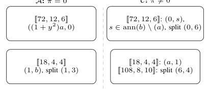
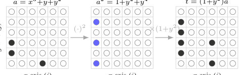
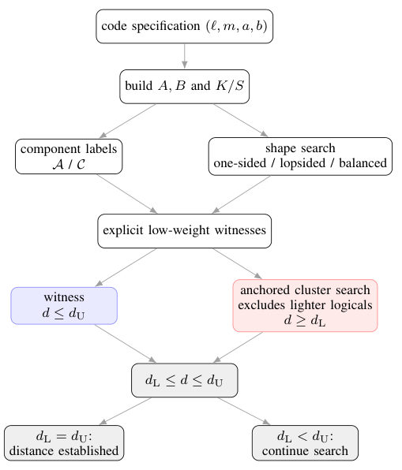
Summary. This paper develops an algebraic method to determine the minimum distance of Bivariate Bicycle quantum codes by analyzing their logical structure using a short exact sequence. The method decomposes the distance into components derived from the annihilator and colon quotients, successfully calculating the distances for several standard codes. This provides a powerful, theory-driven tool for quantum error correction code analysis.
Why it may be interesting. The rigorous algebraic approach to determining code parameters, especially distance, provides powerful tools for analyzing quantum error-correcting codes beyond standard syndrome decoding techniques.
Main problem. The primary goal is to derive the minimum distance of Bivariate Bicycle (BB) quantum codes algebraically, rather than relying on purely numerical methods.
Main result. The authors established a distance identity $d_Z = \min(d_A, d_C)$ using a short exact sequence, and successfully calculated the distances for six standard BB codes.
Method. The analysis employs advanced algebraic techniques, specifically studying the Z-logical quotient $K/S$ over a group algebra, and utilizing a translation-anchored cluster search to establish lower bounds.
Model / system. The system is the Bivariate Bicycle (BB) quantum code, which is a finite-length family of quantum low-density parity-check (LDPC) codes defined over the group algebra $\mathbb{F}_2[x, y]/(x^\ell-1, y^m-1)$.
Key observables. Minimum distance ($d_Z$), logical dimension ($k$), and the component minima ($d_A, d_C$) derived from the annihilator and colon quotients.
Important parameters / regimes. Code lengths ($\ell, m$), the dimension $k$, and the specific parameters defining the six standard codes (e.g., $[[108, 8, 10]]$).
Assumptions / limitations. The analysis relies on the structure provided by the short exact sequence relating the logical quotient to its annihilator and colon components.
Figures summary. Figures illustrate the block structure of the code checks and the overall workflow for bounding the distance, while tables summarize the calculated distances, structural dimensions, and census of logical classes.
Paper structure. The paper proceeds by defining the algebraic structure of the code via the Z-logical quotient, establishing the short exact sequence, deriving the distance identity, and finally applying a structured search algorithm (cluster search) to compute the minimum distance for specific code instances.
Bivariate bicycle (BB) quantum codes are a prominent finite-length family of quantum low-density parity-check codes, but their minimum distance is usually established numerically rather than read from the defining polynomials. We study the $Z$-logical quotient $K/S$ over $\mathbb F_2[x,y]/(x^\ell-1,y^m-1)$ and show that it fits into a short exact sequence with an annihilator quotient as kernel and a colon quotient as cokernel. The sequence gives an explicit logical basis, a dimension formula, and a componentwise distance identity $d_Z=\min(d_{\mathcal A},d_{\mathcal C})$. Using the Frobenius structure of the finite group algebra, we prove $r_{\mathcal A}=r_{\mathcal C}=k/2$ for every BB code, including repeated-root cases. The algebraic component of a logical class is distinct from the support shape of its lightest representatives: an annihilator class can have a lighter two-block representative, and a colon class can have a one-sided minimum. For lower bounds we show that every proper subset of a minimum-weight logical operator has nonzero syndrome, and that this property persists inside the colon component but not inside the annihilator component. A translation-anchored cluster search built on it proves the distances $4,6,10,10,12,18$ of the six standard BB codes of lengths $18$ to $288$ and enumerates every minimum-weight logical operator. The resulting census shows that $[[108,8,10]]$ is the only one of the six whose distance is attained in a single component, with $d_{\mathcal C}=10$ and $d_{\mathcal A}=12$.
Authors: Y. S. Huang, H. X. Song, Y. Sun, J. L. Li, Y. L. Xu, F. C. Wu, Y. C. Gan, Y. F. Wang, H. Wang, Hua Y. Geng
Type: theory · Category: statistical mechanics · PDF: https://arxiv.org/pdf/2609.39686v1
Analysis basis: full PDF text, analyzed in chunks
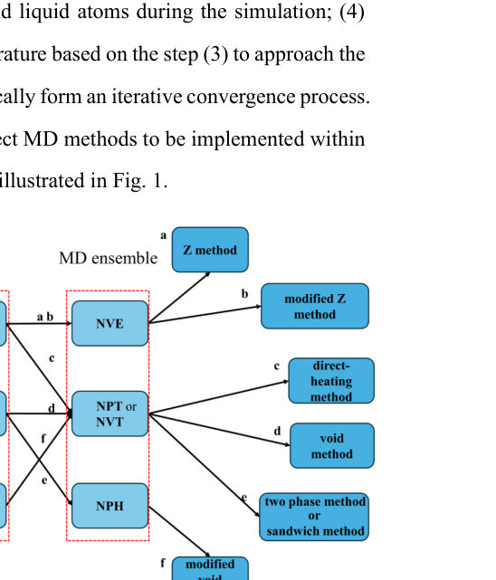
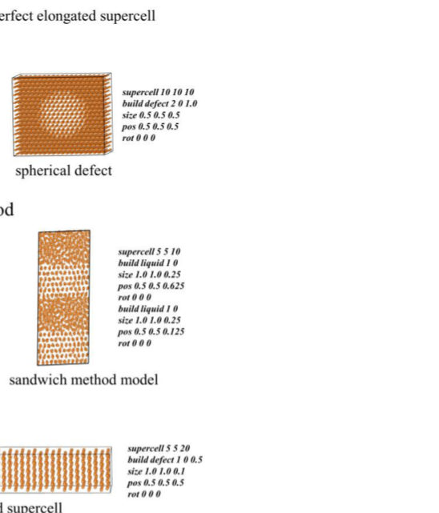
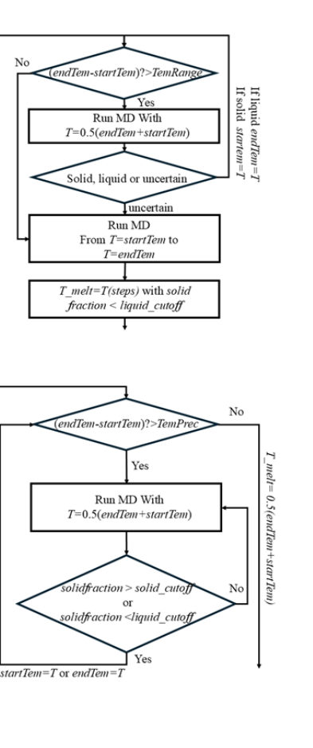
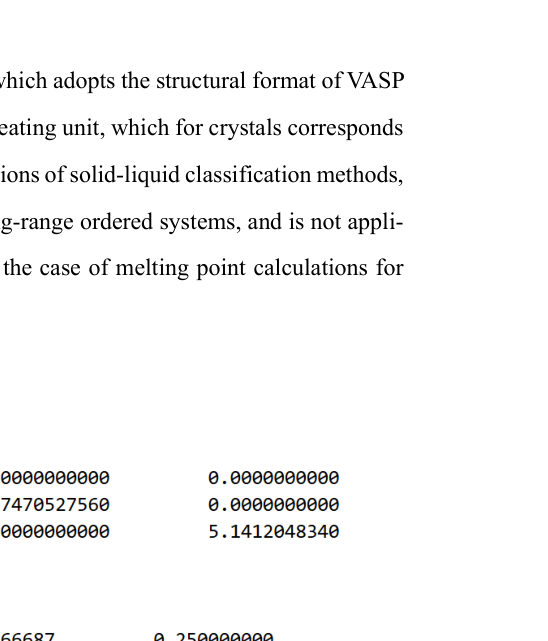
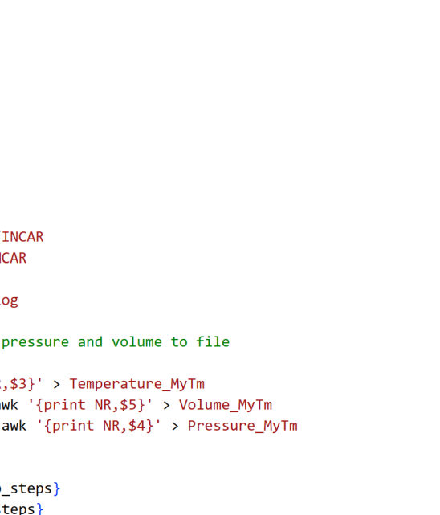
Summary. This paper introduces MyTm, a fully automated toolkit designed to calculate the melting temperature of crystalline materials using Molecular Dynamics simulations. It modularizes the process, integrating multiple established MD techniques and crucially employs a Machine Learning classifier to accurately distinguish between solid-like and liquid-like atomic environments. This automation makes high-throughput screening of phase transitions significantly more feasible.
Why it may be interesting. While focused on classical MD, the rigorous application of ML for phase identification and the development of a highly automated, modular framework for simulating complex phase transitions are relevant to developing robust computational tools for many-body dynamics.
Main problem. The primary goal is to develop an automated, high-throughput computational method for accurately determining the melting temperature (Tm) of materials.
Main result. The proposed toolkit, MyTm, successfully automates various direct Molecular Dynamics (MD) approaches, yielding results comparable to literature values, especially using the solid-liquid coexistence method.
Method. MyTm is a modular toolkit that integrates MD simulations with advanced atomic classification, including a Machine Learning (ML) component, to automate the complex process of phase transition calculation.
Model / system. The toolkit is applicable to long-range ordered crystalline systems, simulating the solid-liquid phase transition using various models like perfect crystals, defective crystals, and two-phase solid-liquid coexistence models.
Key observables. Melting temperature (Tm), solid fraction, and thermodynamic quantities (Temperature, Pressure, Volume).
Important parameters / regimes. The choice of MD ensemble (NPT, NVE, etc.), solid/liquid cutoff thresholds, and simulation parameters are critical.
Assumptions / limitations. The method is limited to crystalline solids and cannot handle amorphous materials; direct-heating and void methods are noted to overestimate Tm.
Figures summary. Figures illustrate the constituent components of the calculation methods, the various models used (direct-heating, void, coexistence), and flowcharts detailing the temperature adjustment procedures.
Paper structure. The paper introduces the problem, details the modular components of MyTm (model construction, ensemble selection, temperature control, classification), presents the ML enhancement, validates the method on several systems, and concludes with a comparison of results across different methods.
Melting temperature calculation is one of the important topics in computational materials science. In high-throughput in silico screening and artificial intelligence assisted design of materials, it usually requires a rapid and autonomous assessment of the melting temperature of the target. Unfortunately, molecular dynamics (MD) simulations of the melting point require many cumbersome and manual operations, making large-scale calculation of the melting point challenging. In this work, we introduce MyTm, a toolkit that employs MD to automatically determine the melting point. The method is fully modularized, and by combining these modules, the program enables fully automated melting calculations by using commonly adopted approaches, including the direct-heating method, the void method, the modified void method, the solid-liquid coexistence method, and the Z method. Moreover, a machine learning (ML) method is proposed and employed to recognize and classify the solid like and liquid like atoms, which effectively resolve the low accuracy issue in conventional classification approaches, thus making the automated high throughput pipeline of melting-point calculation possible. The robustness and efficacy of MyTm have been demonstrated by several well studied systems.
Authors: James Bartusek, Jake Januzelli
Type: theory · Category: other · PDF: https://arxiv.org/pdf/2609.39844v1
Analysis basis: full PDF text, analyzed in chunks
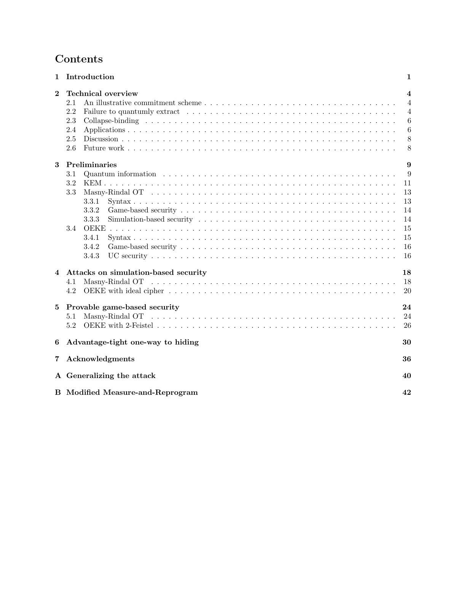
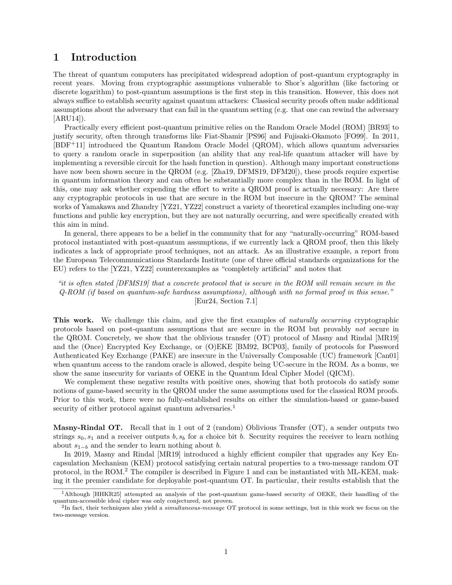
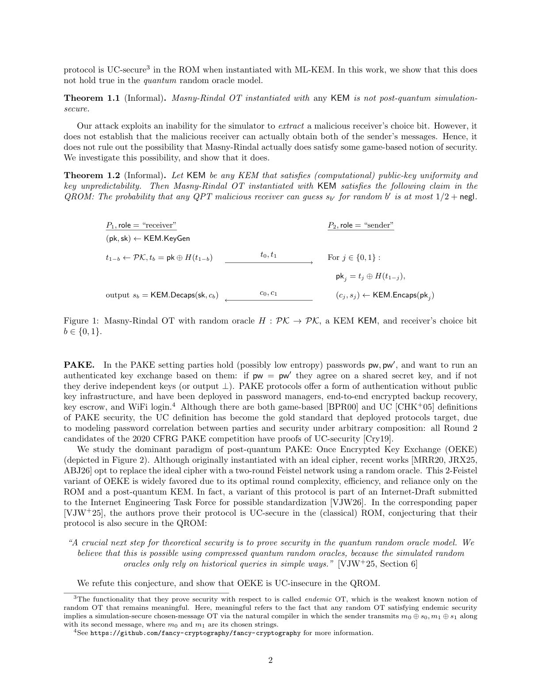
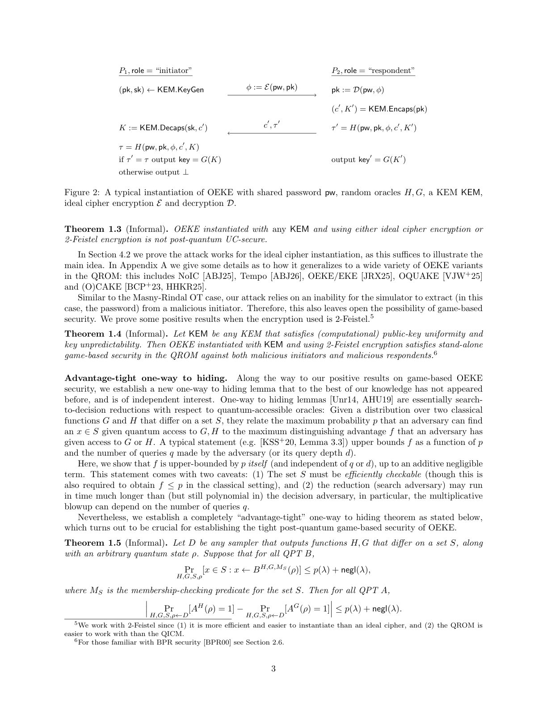
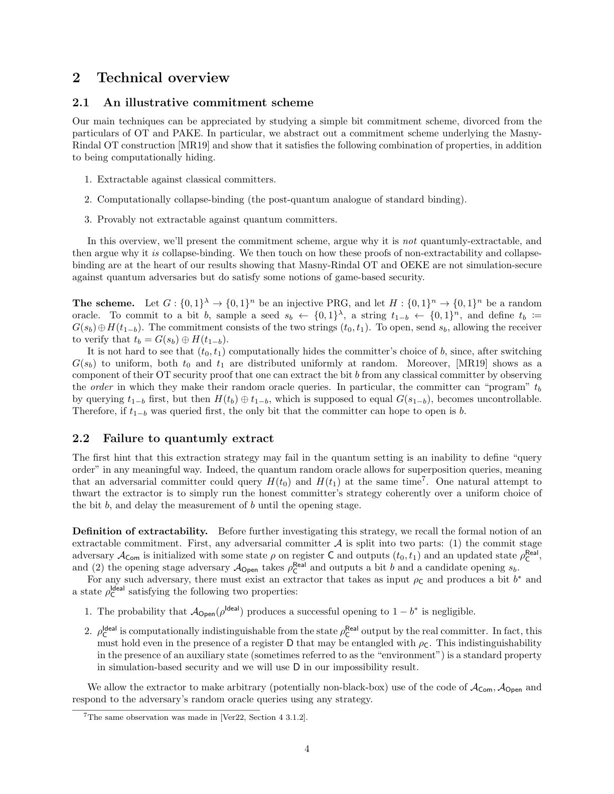
Summary. This paper analyzes the post-quantum security of widely used key exchange and oblivious transfer protocols. The authors prove that these protocols lose their strong Universally Composable security guarantees when faced with quantum adversaries. However, they provide positive results by establishing alternative, game-based security notions that can still hold in the quantum setting.
Why it may be interesting. While the topic is cryptography, the rigorous application of quantum computational models (QROM) to break classical security assumptions is a theoretical exercise in quantum information security.
Main problem. The paper investigates whether the established Universally Composable (UC-) security of key exchange and oblivious transfer protocols translates when the adversary is quantum polynomial-time.
Main result. The authors prove that general families of (O)EKE protocols and Masny-Rindal OT are not UC-secure against quantum adversaries, although they establish that game-based security notions can still hold.
Method. The insecurity is demonstrated by devising a specific adversarial strategy that defeats the simulator's ability to extract input in the quantum setting. Positive results are shown via game-based security proofs.
Model / system. The analysis focuses on cryptographic protocols like Encrypted Key Exchange (EKE) and Masny-Rindal OT, which compile Password-Authenticated Key Exchange (PAKE) and Oblivious Transfer (OT). The security is analyzed in the Quantum Random Oracle Model (QROM).
Key observables. UC-security (failure), game-based security (success), and the ability of an adversary to extract secret inputs (failure).
Important parameters / regimes. Quantum polynomial-time adversaries, the structure of the KEM, and the specific instantiation of the protocols (e.g., 2-Feistel network).
Assumptions / limitations. The analysis builds upon the assumption of ideal symmetric-key primitives and the use of random oracles, contrasting the classical ROM with the QROM.
Figures summary. Figure 1 illustrates the structure of Masny-Rindal OT, and Figure 4 illustrates a typical instantiation of EKE using KEMs and ideal ciphers.
Paper structure. The paper first establishes the failure of UC-security for (O)EKE and Masny-Rindal OT in the quantum setting. It then complements this negative result by establishing positive, game-based security notions for these protocols in the QROM.
Encrypted key exchange (EKE), introduced by Bellovin and Merritt (IEEE S\&P 1992), and Masny-Rindal OT, introduced by Masny and Rindal (ACM CCS 2019), are highly-efficient methods for compiling essentially any KEM into advanced cryptographic protocols, namely password-authenticated key exchange (PAKE) and oblivious transfer (OT), by relying only on idealized symmetric-key primitives. They have become leading candidates for practically-implementable PAKE and OT due to (1) their simplicity, (2) their plug-and-play nature, allowing for flexibility in the choice of KEM, and (3) existing proofs of UC-security (in the classical adversarial model). Due to point (2) above, these compilers yield attractive candidates for efficient \emph{post-quantum} PAKE and OT, especially given the recent post-quantum KEM standardization efforts. This motivates the question of whether the (UC-)security of these compilers translates to the quantum adversarial model. In this work, we show that it does not. In particular, we prove that a general family of (O)EKE protocols, as well as Masny-Rindal OT, are \emph{not} UC-secure against quantum polynomial-time adversaries, even when instantiated with a post-quantum KEM. To establish UC-insecurity, we devise an adversarial strategy that provably thwarts any attempt by the simulator to extract its input (the password in the case of PAKE, and the receiver's choice bit in the case of OT). To complement these negative results, we establish that both compilers yield certain notions of \emph{game-based} security. Along the way, we establish a novel ``advantage-tight'' one-way to hiding lemma that may be of independent interest.
Authors: Zihan Hu, Yupan Liu
Type: theory · Category: quantum information and computing · PDF: https://arxiv.org/pdf/2609.39495v1
Analysis basis: full PDF text, analyzed in chunks
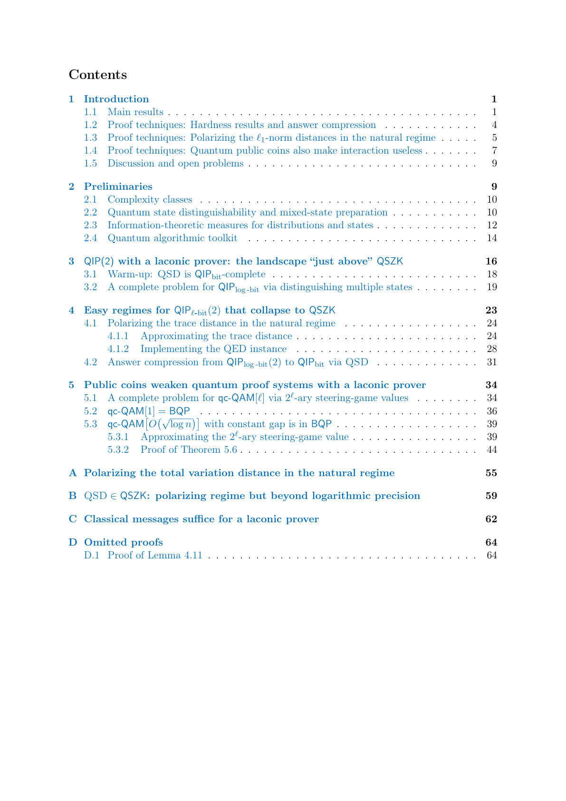
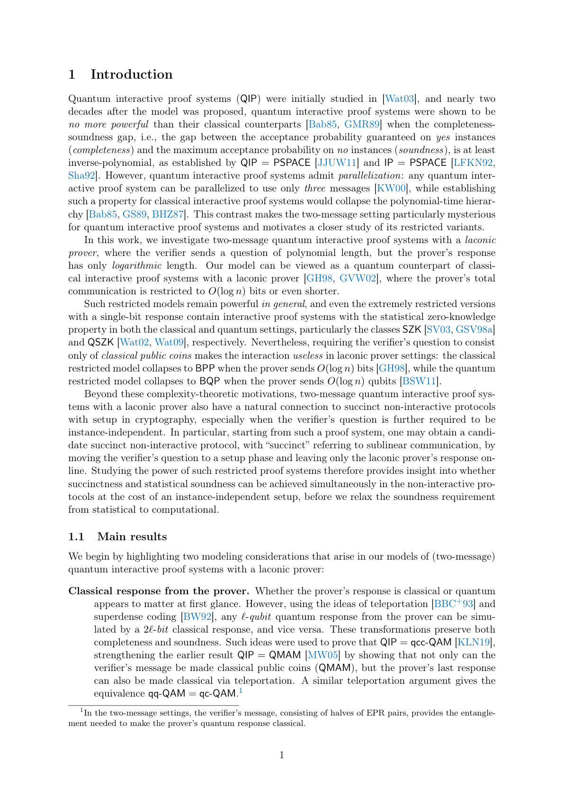
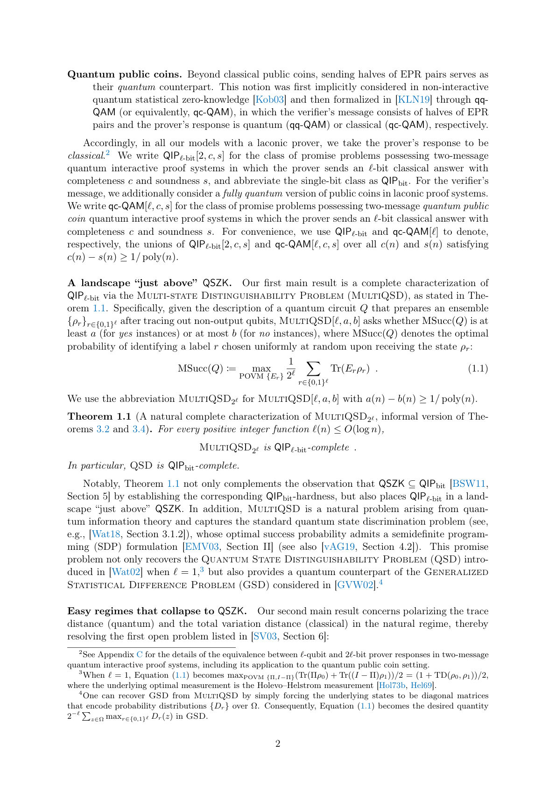
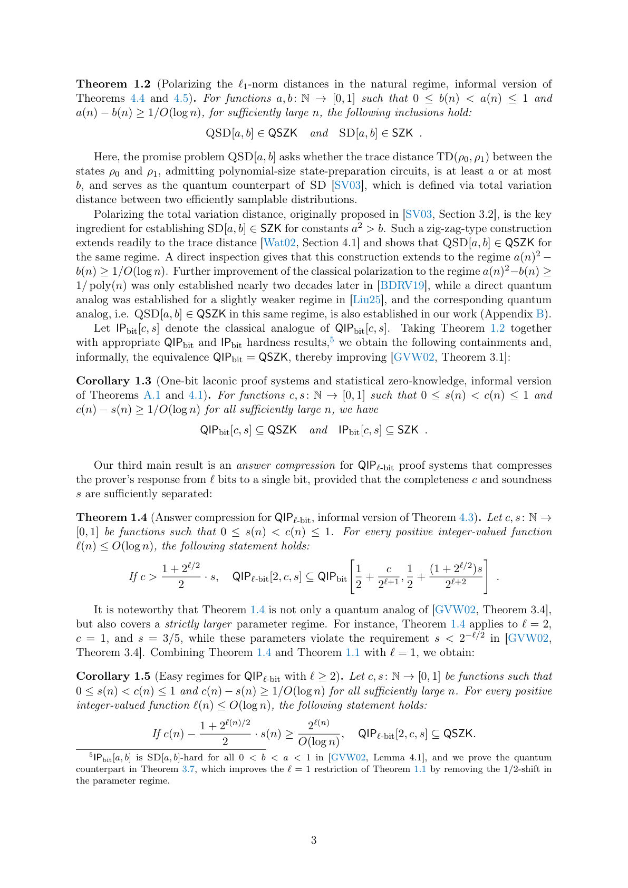
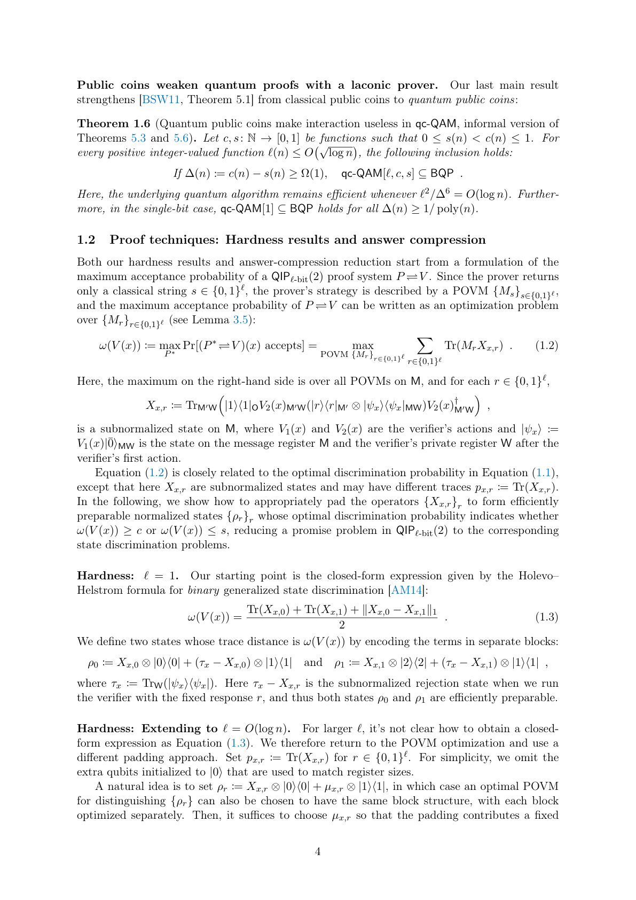
Summary. This paper rigorously analyzes quantum interactive proof systems with a restricted (laconic) prover response. It characterizes the complexity class $ ext{QIP}_{\ell ext{-bit}}(2)$ using Multi-State Distinguishability, showing it sits slightly above $ ext{QSZK}$. Furthermore, it identifies precise conditions under which these powerful quantum protocols collapse to weaker, more understood classes like $ ext{QSZK}$ or $ ext{BQP}$.
Why it may be interesting. This work provides deep theoretical insights into the limits of quantum verification protocols, which underpins the security and computational power of quantum computation models.
Main problem. The paper investigates the characterization and complexity of two-message quantum interactive proof systems ($ ext{QIP}_{\ell ext{-bit}}(2)$) involving a prover with limited (laconic) communication.
Main result. It establishes that $ ext{QIP}_{\ell ext{-bit}}(2)$ is completely characterized by Multi-State Distinguishability (MultiQSD), placing it just above Quantum Statistical Zero-Knowledge ($ ext{QSZK}$), and identifies specific conditions under which it collapses to $ ext{QSZK}$ or $ ext{BQP}$.
Method. The analysis uses techniques involving state distinguishability (Trace Distance, Quantum Jensen-Shannon Divergence) and reduction arguments to relate the QIP model to known complexity classes.
Model / system. The core model is the two-message quantum interactive proof system with a laconic prover, where the verifier interacts with a prover whose response length $\ell$ is logarithmic in the input size $n$.
Key observables. Quantum State Distinguishability (QSD), Multi-State Distinguishability (MultiQSD), and the acceptance probability $\omega(V(x))$ of the proof system.
Important parameters / regimes. The length of the prover's response ($\ell$), and the gap parameters $a(n)$ and $b(n)$ governing the distinguishability problems.
Assumptions / limitations. The analysis relies on specific conditions for collapse regimes, such as $a(n) - b(n) \ge 1/O(\log n)$ for $ ext{QSD} \in ext{QSZK}$, and the use of answer compression techniques.
Paper structure. The paper proceeds by first characterizing the $ ext{QIP}_{\ell ext{-bit}}(2)$ class using MultiQSD, then proving specific collapse regimes to $ ext{QSZK}$ or $ ext{BQP}$ based on parameter choices, and finally establishing relationships between different quantum distance measures.
Interactive proof systems with a laconic prover, studied by Goldreich, Vadhan, and Wigderson (CC, 2002), capture problems verifiable with logarithmic prover communication in the classical setting. For two-message quantum analogs, even a single-bit prover response contains quantum statistical zero-knowledge ($\sf QSZK$), introduced by Watrous (FOCS 2002). However, restricting the verifier's question to classical public coins collapses the corresponding class to $\sf BQP$, as shown by Beigi, Shor, and Watrous (ToC, 2011). We further study two-message quantum interactive proof systems with a laconic prover. To this end, we introduce the class ${\sf QIP}_{\ell\text{-}{\rm bit}}(2)$, where $\ell$ is the length of the prover's response, and establish: 1. A natural complete characterization of ${\sf QIP}_{\ell\text{-}{\rm bit}}(2)$ by Multi-State Distinguishability. In particular, Quantum State Distinguishability (QSD) is ${\sf QIP}_{\rm bit}$-complete. Since QSD is $\sf QSZK$-hard, our result places ${\sf QIP}_{\ell\text{-}{\rm bit}}(2)$, for $\ell\geq 2$, in a landscape "just above" $\sf QSZK$. 2. Easy regimes for ${\sf QIP}_{\ell\text{-}{\rm bit}}(2)$ collapsing to $\sf QSZK$. We prove that QSD$[a,b]$ (and thus ${\sf QIP}_{\rm bit}[a,b]$) is in $\sf QSZK$ when $a(n)-b(n)\geq 1/O(\log n)$, and combine this with an answer compression from ${\sf QIP}_{\ell\text{-}{\rm bit}}[2,c,s]$ to ${\sf QIP}_{\rm bit}$ to obtain another easy regime when $2c>(1+2^{\ell/2})s$. Remarkably, our improved polarization applies to SD and $\sf SZK$, resolving an open problem in Sahai and Vadhan (JACM, 2003). 3. Quantum public coins also make the interaction useless: ${\sf qc}\text{-}{\sf QAM}[O(\sqrt{\log{n}})]$ with constant gap is in $\sf BQP$, where ${\sf qc}\text{-}{\sf QAM}[\ell]$ is a subclass of ${\sf QIP}_{\ell\text{-}{\rm bit}}(2)$ in which the verifier's question is exactly halves of EPR pairs.
Authors: Nicholas Spooner, Max Tromanhauser
Type: theory · Category: quantum information and computing · PDF: https://arxiv.org/pdf/2609.38387v1
Analysis basis: full PDF text, analyzed in chunks
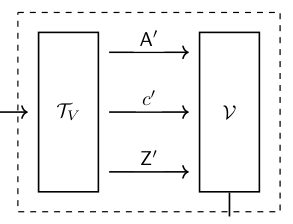
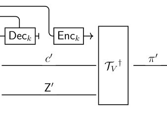
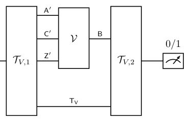
Summary. This paper investigates the theoretical limits of creating non-interactive quantum proofs for QMA. By constructing a specific forgery attack, the authors prove that if a general quantum compiler exists to remove interaction from quantum protocols, it forces the collapse of the complexity class QMA down to BQP. This result has major implications for quantum cryptography and zero-knowledge proof systems.
Why it may be interesting. While highly theoretical, the collapse of QMA to BQP has profound implications for the computational power achievable with quantum proofs, which underpins quantum cryptography and verification protocols.
Main problem. The central problem is constructing publicly-verifiable Non-Interactive Zero-Knowledge Proofs (NIZKs) for the complexity class QMA.
Main result. The authors show that assuming the existence of certain quantum non-interactivity compilers (QNICs), the complexity class QMA collapses to BQP (QMA = BQP).
Method. The proof involves constructing a forgery attack that exploits the supposed compiler mechanism, demonstrating that the indistinguishability of 'real' and 'defer' quantum channels allows for the construction of a QMA-complete decision algorithm.
Model / system. The work operates within the theoretical framework of quantum computation, specifically analyzing $\Sigma$-protocols ($\Xi$-protocols) for QMA and the role of the Fiat-Shamir transformation in quantum settings.
Key observables. Acceptance probabilities for the proof system, soundness error ($\delta(n)$), and completeness probability ($\mu_x$).
Important parameters / regimes. The existence of quantum commitments and the nature of the compiler (straight-line vs. general).
Assumptions / limitations. The primary assumption is the existence of generic, small-error, straight-line Quantum Non-Interactivity Compilers (QNICs) in the QROM.
Figures summary. Figure 1 illustrates the structure of a straight-line 'Fiat–Shamir-like' compiler. Figure 2 depicts the 'Real' and 'Defer' quantum channels used in the attack construction, and Figure 3 shows the overall attack flow on the Straightline QNIC.
Paper structure. The paper first establishes the motivation by contrasting classical and quantum NIZK construction. It then develops the core argument by constructing a forgery attack that relies on the assumed compiler structure, culminating in the proof that this assumption implies QMA = BQP.
An important open question in quantum cryptography is the construction of publicly-verifiable NIZKs for QMA. Classically, one can construct NIZKs for NP in the random oracle model (and sometimes in the standard model) by compiling an honest-verifier ZK (HVZK) $Σ$-protocol for NP using the Fiat-Shamir transformation. Broadbent and Grilo introduced a quantum analog of a $Σ$-protocol (which they call a $Ξ$-protocol) in which the prover's first message is quantum, and show that HVZK $Ξ$-protocols exist for QMA. However, it is not clear how to compile such protocols into NIZKs in the (Q)ROM, because the Fiat-Shamir transformation seems to be incompatible with quantum messages. In this work we give formal evidence that this is indeed the case: we show that if generic "Fiat-Shamir-like" compilers for quantum protocols exist in the QROM (with small completeness and soundness error) then QMA = BQP.
Authors: Philip Rasmussen, Søren S. Sørensen
Type: theory · Category: disordered systems and neural networks · PDF: https://arxiv.org/pdf/2609.39541v1
Analysis basis: full PDF text, analyzed in chunks
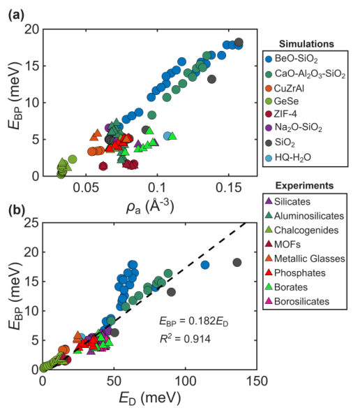
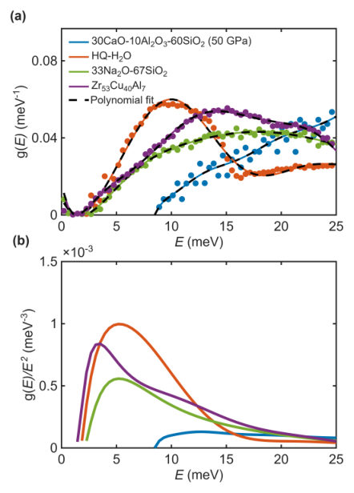
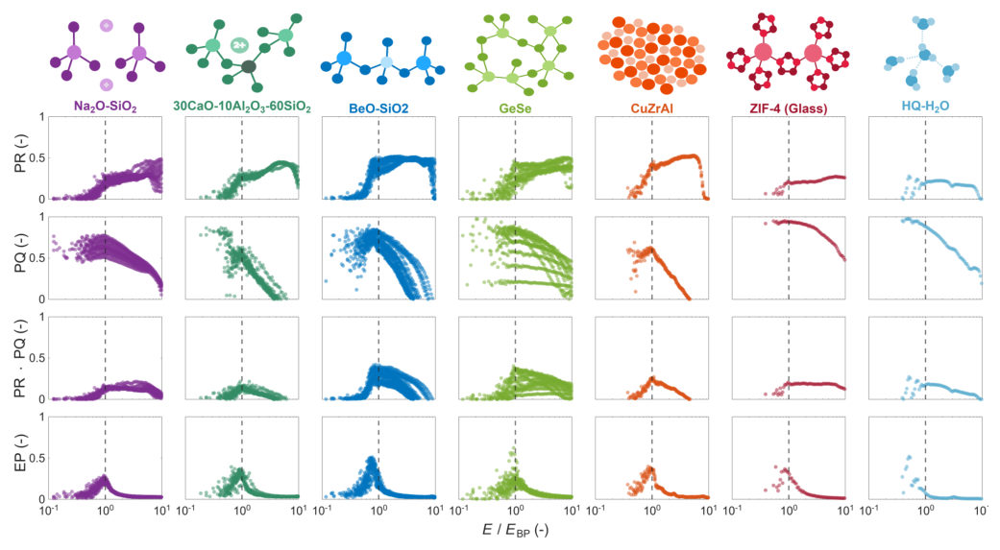
Summary. This work investigates the Boson Peak in glasses by analyzing vibrational modes using multiple metrics beyond the standard density of states. The authors demonstrate that the BP marks a critical transition where vibrational modes achieve a unique combination of spatial extension, local phase coherence, and wave-like order. This provides a unified, microscopic picture of vibrational physics in disordered materials.
Why it may be interesting. The connection drawn between vibrational coherence (PQ, EP) and spatial extent (PR) at the BP provides a detailed, quantitative understanding of vibrational dynamics in disordered solids, relevant to understanding energy transport in complex materials.
Main problem. The paper aims to elucidate the microscopic origin of the Boson Peak (BP) in the vibrational spectra of glasses, which deviates from the Debye model.
Main result. The BP energy correlates with elastic properties, and its presence coincides with a transition where vibrational modes exhibit a combination of substantial spatial extent, maximal local phase coherence, and maximal wave-like order.
Method. The analysis involves normal mode calculations to determine the vibrational density of states, alongside calculating diagnostics like the Participation Ratio (PR), Phase Quotient (PQ), and Eigenvector Periodicity (EP).
Model / system. The study applies these vibrational analyses to a wide range of glassy and disordered systems, including oxides, chalcogenides, metallic glasses, and glassy water.
Key observables. Boson Peak energy (E_BP), Participation Ratio (PR), Phase Quotient (PQ), Eigenvector Periodicity (EP), and the reduced density of states g(E)E^-2.
Important parameters / regimes. Atomic number density (rho_a) and Debye energy (E_D) are used to establish scaling laws for E_BP.
Assumptions / limitations. The analysis relies on the harmonic approximation for calculating the dynamical matrix and vibrational modes.
Figures summary. Figures illustrate the BP variation across different glass families, confirm the scaling of E_BP with elastic properties, and plot PR, PQ, and EP showing characteristic crossovers at E_BP.
Paper structure. The paper systematically analyzes the BP using multiple mode descriptors (PR, PQ, EP) to show that the BP marks a crossover from localized, non-periodic vibrations to an extended, yet non-wave-like, regime.
The boson peak is a vibrational feature commonly found in glassy and disordered systems described as the deviation from the scaling of the Debye model ($g({E}){\propto}{E}^2$). Despite much interest, the microscopic nature of the vibrations is only anecdotally discussed. Here we report how the boson peak appears in conjunction with a crossover from localized to extended but non-wave-like and coincide with a maximum in phase coherence and spatial periodicity. Our analyses provide new insights into the microscopic origin of the boson peak across a wide range of glasses.
Authors: Sadhgun Ram Dasi, Aswath Babu H
Type: both · Category: quantum information and computing · PDF: https://arxiv.org/pdf/2609.38380v1
Analysis basis: full PDF text, analyzed in chunks
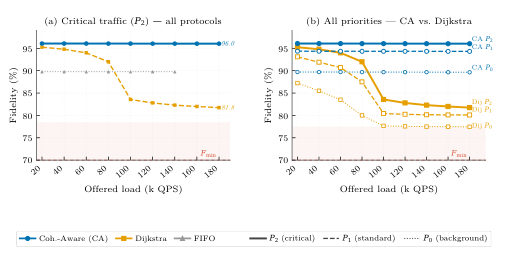
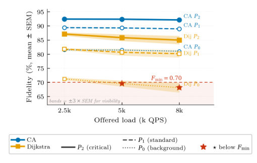
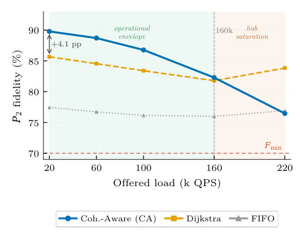
Summary. This paper introduces a novel, coherence-aware routing protocol for quantum networks that explicitly accounts for decoherence caused by queuing delays. By integrating principles from Weighted Fair Queueing theory, the protocol prioritizes traffic to mitigate fidelity loss under high network load. The results demonstrate substantial improvements in quantum fidelity and throughput compared to existing loss-only or FIFO scheduling methods.
Why it may be interesting. It directly addresses the practical limitations of quantum communication by quantifying the impact of classical network congestion (queuing delay) on fundamental quantum information metrics like fidelity.
Main problem. Quantum networks suffer from decoherence due to finite memory coherence times, which is exacerbated by queuing delays in classical routing protocols.
Main result. The proposed coherence-aware routing protocol significantly maintains quantum fidelity and throughput under high load compared to standard routing methods, especially on scale-free topologies.
Method. The protocol integrates decoherence constraints into path selection using a priority-modulated aging model derived from Weighted Fair Queueing theory.
Model / system. The system is a quantum network modeled as a directed graph where nodes are quantum repeaters with finite memory, and edges are optical links subject to photon loss and propagation latency.
Key observables. Fidelity (e.g., 96.08% under 9x load increase), aggregate throughput, and tail latency (P2 P95).
Important parameters / regimes. Coherence time ($T_{mem} = 400 \mu s$), minimum fidelity threshold ($F_{min} = 0.70$), and network load (up to 180k QPS).
Assumptions / limitations. The fidelity decay is modeled using an exact simplification for pure dephasing ($F(t) = 1 - e^{-t/T_{mem}^2}$), and the queue estimation uses an EWMA model.
Figures summary. The results compare the protocol's performance against loss-only Dijkstra and FIFO scheduling across ER and BA topologies, showing quantitative gains in fidelity and throughput.
Paper structure. The paper introduces the physical problem (decoherence in queuing), develops the theoretical framework (WFQ-derived aging model and composite cost function), presents the custom simulator, and validates the protocol's performance across different network topologies under stress.
Quantum networks face a fundamental challenge absent in classical networks; finite memory coherence times mean that queuing delay directly degrades information quality, causing decoherence that has no classical analog. Existing routing protocols optimize for hop count or channel fidelity while treating scheduling delays as a secondary concern, leaving fidelity vulnerable to congestion-induced decoherence. We present a coherence-aware routing protocol that integrates decoherence constraints into path selection via a priority-modulated aging model derived analytically from Weighted Fair Queueing theory, where high-priority traffic receives compressed effective queue delay. We build a custom discrete-event simulator verified against NetSquid (across 104 states), and evaluate across two structurally diverse topology classes under identical physical parameters, isolating topology structure as the sole independent variable. In all experiments, our protocol is benchmarked against loss-only Dijkstra routing and FIFO scheduling as baselines. On topologies, P2 traffic achieves 96.08% fidelity under a 9x load increase with only 0.04 percentage point degradation, versus a 13.51 percentage point collapse for the loss-only baseline; P2 tail latency holds stable at 0.055 ms while Dijkstra degrades 5.5x. On Barabasi-Albert scale-free topologies, our protocol delivers a +4.12 percentage point fidelity advantage with 97.8% higher aggregate throughput at operational loads over the baseline, with a clearly characterized hub-saturation boundary at 160k QPS. FIFO scheduling provides negligible priority differentiation on both topology classes, providing strong evidence that coherence-aware routing-not scheduling alone is responsible for the observed QoS gains.
Authors: Danqing Hu, Jiangfan Wang, Zixiang Hu, Yi-feng Yang
Type: theory · Category: strongly correlated electrons · PDF: https://arxiv.org/pdf/2609.40109v1
Analysis basis: full PDF text, analyzed in chunks
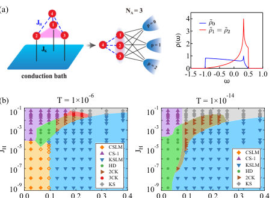
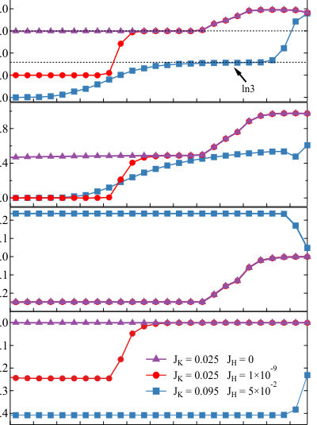
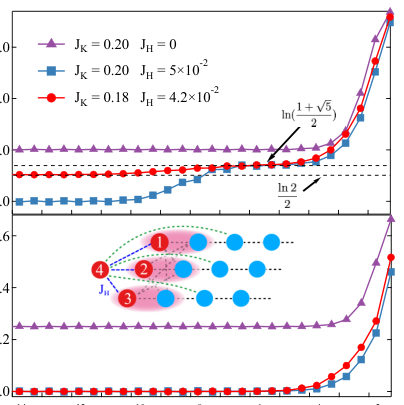
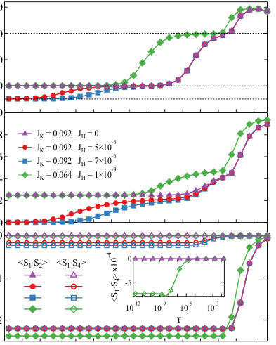
Summary. This paper investigates the nature of Kondo screening in a four-impurity Kondo model using the AUNRG technique. By coupling a probe impurity to three primary impurities, the authors successfully distinguish between collective and individual screening mechanisms. The results confirm the existence of emergent 2CK and 3CK effects, providing deeper insight into multi-impurity quantum magnetism.
Why it may be interesting. The work provides a concrete theoretical framework (AUNRG) to analyze complex many-body quantum states in correlated electron systems, offering insights into how local interactions give way to emergent collective behavior.
Main problem. The paper addresses the fundamental challenge of distinguishing between collective (multi-impurity) and individual (local) Kondo screening mechanisms in complex multi-impurity Kondo systems.
Main result. The study demonstrates that the four-impurity model exhibits emergent multi-stage, two-channel Kondo (2CK) effects from collective screening and unstable three-channel Kondo (3CK) effects from individual screening.
Method. The research utilizes the Auxiliary-Bath Numerical Renormalization Group (AUNRG) method, which is applied to analyze the complex spin interactions in the multi-impurity Kondo model.
Model / system. The primary system is a $C_3$-symmetric four-impurity Kondo (4IK) model, which extends the previously studied three-impurity Kondo (3IK) model. The Hamiltonian involves couplings between impurity spins and a shared electron bath.
Key observables. Impurity entropy ($ ext{Simp}$), effective moment ($\mu_{ ext{eff}}$), and various spin correlation functions are used to diagnose the nature of the screened state.
Important parameters / regimes. The key parameters are the Kondo coupling strength ($J_K$) and the coupling strength involving the probe impurity ($J_H$), analyzed across different temperature regimes.
Assumptions / limitations. The analysis relies on the applicability and extension of the AUNRG method to systems with additional impurities decoupled from the bath.
Figures summary. Figures illustrate the 4IK model geometry and numerical phase diagrams on the $J_K$-$J_H$ plane, while other figures show the temperature evolution of observables demonstrating the emergence of specific cluster states.
Paper structure. The paper first establishes the theoretical framework using the AUNRG method, applies it to the 4IK model, and then analyzes the resulting phase diagram to distinguish between the signatures of collective (2CK) and individual (3CK) screening regimes.
Collective screening has been proposed to underlie the basic physics of multi-impurity and lattice Kondo systems. But how to establish this picture and distinguish it from individual (local) Kondo screening remains a grand challenge. The recently developed auxiliary-bath numerical renormalization group (AUNRG) method provides a key step towards resolving this issue. Its application to the $C_3$-symmetric three-impurity Kondo (3IK) model with a shared electron bath reveals fully screened Fermi liquid ground states arising from collective screening of cluster spin degrees of freedom at small Kondo coupling $J_{\rm K}$ and individual (local) screening of local impurities at large $J_{\rm K}$. Here we design a four-impurity Kondo (4IK) model where the probe impurity couples only to the original three Kondo impurities to detect the nature of the screened states. We show that the collective and individual Kondo screenings give rise to emergent multi-stage, two-channel Kondo effect and unstable three-channel Kondo effect, respectively. This suggests a special helicity structure of the screened states and confirms the idea of collective screening in multi-impurity Kondo systems. Our work also demonstrates that the same auxiliary-bath construction can be readily extended to models with additional impurities to explore novel many-body quantum states with emergent cluster degrees of freedom.
Authors: Anuj Apte, Abid Khan, Edward Farhi, Kunal Marwaha, Sami Boulebnane, Ruslan Shaydulin
Type: theory · Category: quantum information and computing · PDF: https://arxiv.org/pdf/2609.39042v1
Analysis basis: full PDF text, analyzed in chunks
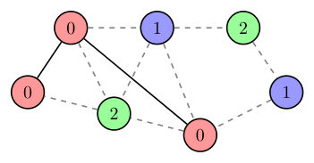
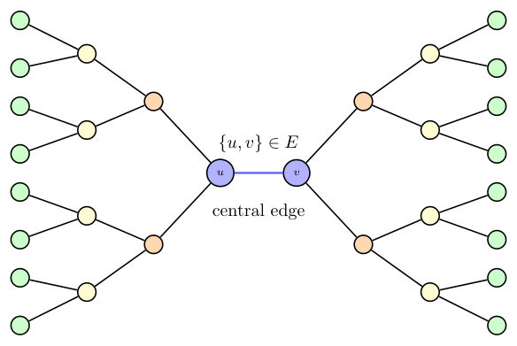
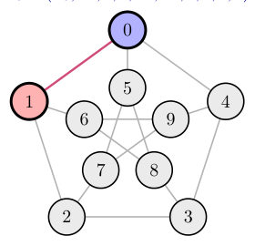
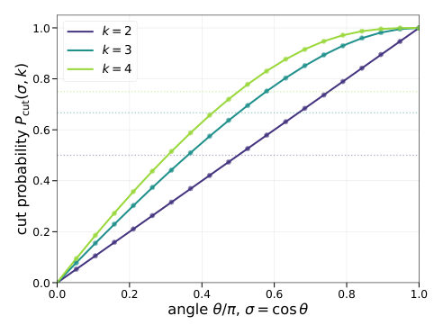
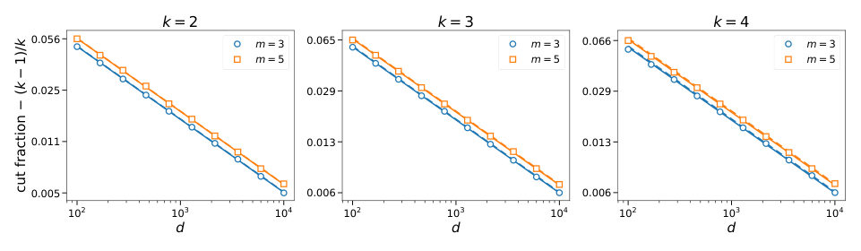
Summary. This paper rigorously compares the performance of classical and quantum algorithms for the Max-$k$-Cut problem on structured graphs. By developing an improved local vector algorithm and analyzing QAOA using tensor networks, the authors provide provable guarantees. They conclude that QAOA surpasses the best classical bounds for sufficiently deep circuits, suggesting a concrete instance of quantum advantage.
Why it may be interesting. The work directly compares the scaling and performance of quantum algorithms (QAOA) against state-of-the-art classical methods (local vector algorithms) for a fundamental NP-hard optimization problem, which is central to quantum computation theory.
Main problem. The paper develops and compares provable classical and quantum local algorithms for solving the Max-$k$-Cut problem on regular graphs.
Main result. The Quantum Approximate Optimization Algorithm (QAOA) achieves a better cut-fraction guarantee than the best known classical algorithm for sufficiently deep circuits ($p \ge 9$) on graphs with high girth, suggesting an apparent quantum advantage.
Method. The authors employ a local vector algorithm generalizing TPM for the classical side, and they analyze QAOA performance using tensor network techniques and an equivalence to a coupled qudit–boson system for the quantum side.
Model / system. The problem is formulated on Max-$k$-Cut on $d$-regular graphs of girth $g$. The analysis focuses on the cost function $C_G(\chi) = \sum_{{u,v}\in E} \mathbb{1}[\chi(u) eq \chi(v)]$, where $\chi: V o \mathbb{Z}_k$.
Key observables. Cut fraction (ratio of cut edges to total edges) and the approximation ratio relative to the optimum $ ext{OPT}_k(G)$.
Important parameters / regimes. Number of subsets ($k$), graph degree ($d$), girth ($g$), and QAOA depth ($p$).
Assumptions / limitations. The analysis simplifies by restricting to regular graphs with girth $g \ge 2p + 2$ to enable tree-like structure analysis for expectation values.
Figures summary. Figure 1 illustrates Max-3-Cut on a small graph, and the paper references multiple tables (2-5) detailing cut fractions for Max-2, 3, and 4-Cut across varying depths and degrees.
Paper structure. The paper first introduces the Max-$k$-Cut problem and compares it to SDP relaxations. It then details the development of an improved local vector algorithm for the classical bound. Finally, it analyzes QAOA performance using advanced techniques, culminating in a comparison showing quantum advantage for large girth.
Broadening the study of quantum optimization algorithms from binary to $k$-element alphabets has been shown to open new avenues for potential quantum advantage. A quantum advantage claim for approximate optimization requires showing that, under the same assumptions, an efficient quantum algorithm provably achieves a better performance than can be proven for the best known efficient classical algorithms. We study local classical and quantum algorithms for Max-$k$-Cut on $d$-regular graphs of girth $g$. We advance classical algorithms for this problem by developing a local vector algorithm based on the explicit vector construction of Thompson, Parekh, and Marwaha (TPM). Our algorithm gives the best provable cut fraction guarantee among known efficient classical algorithms on regular graphs for $k\geq3$. To evaluate the performance of QAOA under identical assumptions of girth and regularity, we develop tensor network techniques for general $d$ and $k \geq 2$. In addition, using an equivalence to a coupled qudit--boson system, we compute the QAOA performance in the infinite-degree limit. Together, these techniques give provable guarantees on QAOA performance on large graphs. Despite the improvements we introduce to the classical algorithm, QAOA achieves a better cut fraction guarantee for depths $p\geq 9$, corresponding to girth $g\geq 20$, for both finite- and infinite-degree regimes. Thus, we obtain an apparent quantum advantage from applying QAOA to the Max-$k$-Cut problem.
Authors: Alex Della Schiava, Ranitha Mataraarachchi
Type: theory · Category: quantum information and computing · PDF: https://arxiv.org/pdf/2609.39668v1
Analysis basis: full PDF text, analyzed in chunks
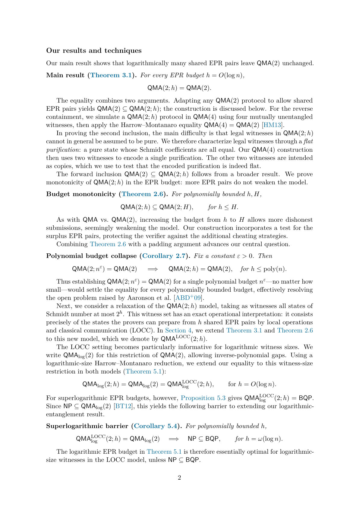
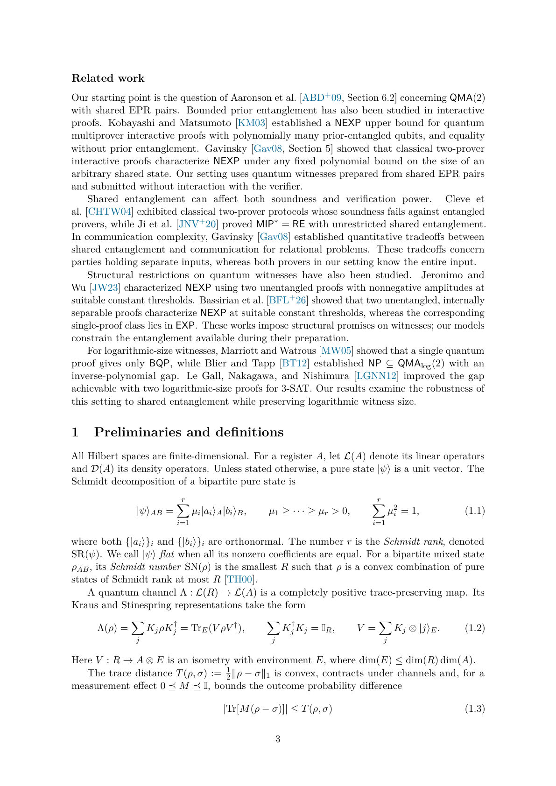
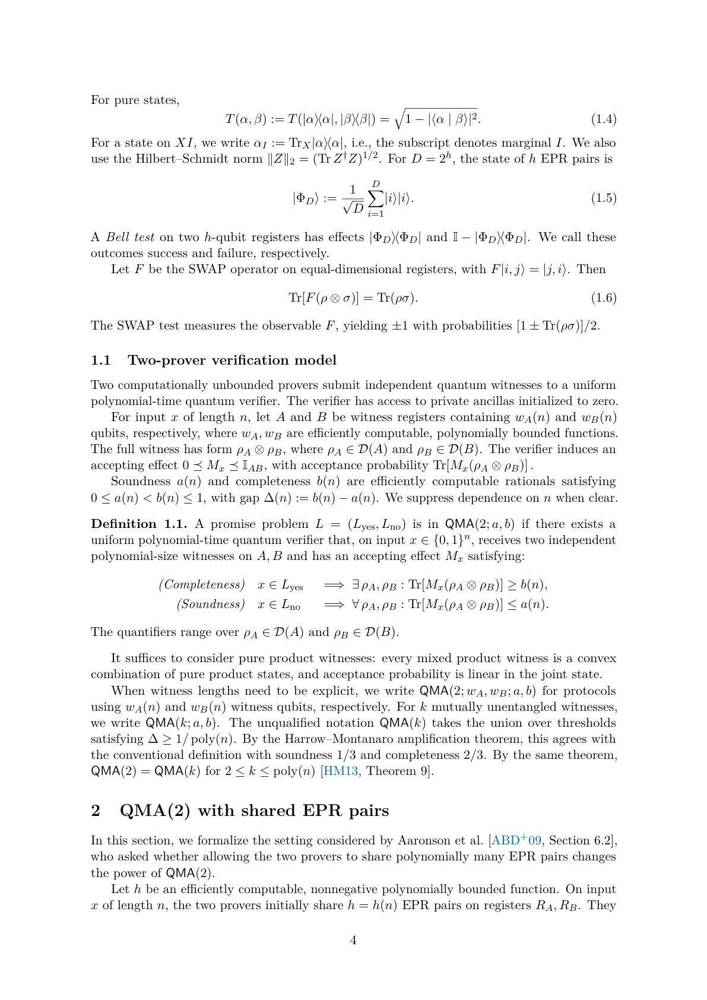
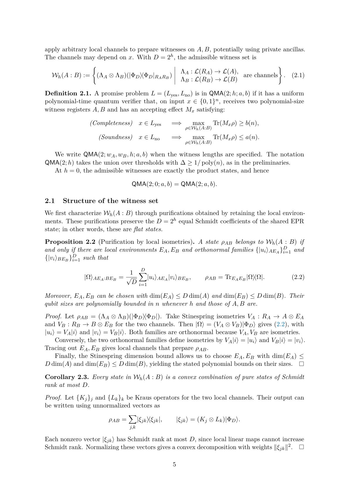
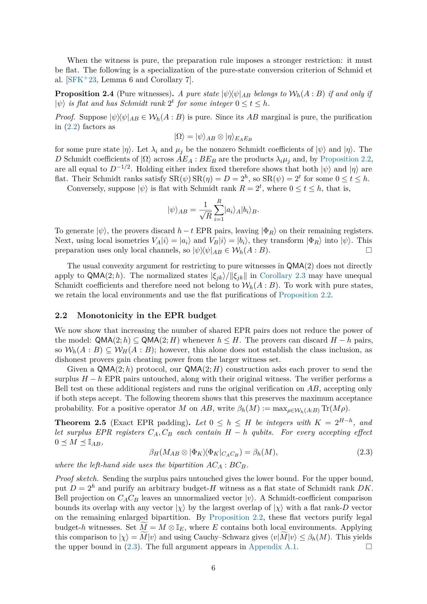
Summary. This paper rigorously analyzes the robustness of the QMA(2) complexity class against limited shared entanglement, showing that sharing only a logarithmic number of EPR pairs does not increase the computational power. The findings resolve an open problem regarding polynomial entanglement budgets and establish a critical threshold: exceeding logarithmic entanglement in certain models implies a major collapse ($ ext{NP} \subseteq ext{BQP}$).
Why it may be interesting. The results provide fundamental bounds on the role of entanglement in quantum complexity theory, which is crucial for understanding the limits of quantum verification protocols.
Main problem. The paper investigates how the computational power of the QMA(2) complexity class is affected when the two provers are allowed to share a limited amount of entanglement, quantified by $h$ shared EPR pairs.
Main result. The power of QMA(2) remains unchanged even when the provers share a logarithmic number of EPR pairs ($h=O(\log n)$), and establishing this for polynomial budgets would resolve an open problem in the field.
Method. The analysis uses techniques involving simulating QMA(2; h) within QMA(4) using four unentangled witnesses, combined with monotonicity proofs and padding arguments.
Model / system. The model is the QMA(2) protocol, where two provers submit quantum witnesses to a quantum verifier. The resource being studied is the shared entanglement, modeled by $h$ EPR pairs, leading to the class $ ext{QMA}(2; h)$.
Key observables. The acceptance probability of the quantum verifier, the gap ($\gamma$) between completeness and soundness thresholds, and the required entanglement budget ($h$).
Important parameters / regimes. Input length $n$, entanglement budget $h$, and the fixed constant $\epsilon$ used in polynomial padding arguments.
Assumptions / limitations. The analysis relies on the Harrow-Montanaro equality ($ ext{QMA}(4) = ext{QMA}(2)$) and the ability to simulate protocols using index purity gaps and Bell tests.
Paper structure. The paper progresses by first establishing the general relationship between $ ext{QMA}(2; h)$ and $ ext{QMA}(2)$, then proving the logarithmic equivalence ($ ext{QMA}(2; O(\log n)) = ext{QMA}(2)$), and finally extending these results to the LOCC setting, where superlogarithmic entanglement implies $ ext{NP} \subseteq ext{BQP}$.
A $\mathsf{QMA}(2)$ protocol involves two provers submitting unentangled witnesses to a polynomial-time quantum verifier. In The Power of Unentanglement (ToC, 2009), Aaronson et al. proposed $\mathsf{QMA}(2;h)$, a variant of $\mathsf{QMA}(2)$ in which the two provers may share $h$ EPR pairs. Our main result shows that the power of $\mathsf{QMA}(2)$ remains unchanged for up to logarithmically many shared EPR pairs: $\mathsf{QMA}(2;h)=\mathsf{QMA}(2)$ for $h=O(\log n)$, where $n$ is the input length. The result follows from a simulation using four unentangled witnesses, combined with the Harrow-Montanaro equality $\mathsf{QMA}(4)=\mathsf{QMA}(2)$ (FOCS, 2010). We also prove monotonicity in the EPR budget: $\mathsf{QMA}(2;h)\subseteq\mathsf{QMA}(2;H)$ for $h\le H$, preserving completeness and soundness. Combined with input padding, this shows that establishing $\mathsf{QMA}(2;n^\varepsilon)=\mathsf{QMA}(2)$ for any fixed $\varepsilon>0$ would imply equality for every polynomially bounded budget, resolving the open problem raised by Aaronson et al. Finally, we extend these results to a variant of the model in which the provers may use local operations and classical communication (LOCC) during witness preparation. For logarithmic-size witnesses and inverse-polynomial gaps, both models remain equivalent to their unentangled counterpart when $h=O(\log n)$. We show that extending this equivalence to any superlogarithmic EPR budget in the LOCC model would imply $\mathsf{NP}\subseteq\mathsf{BQP}$.
Authors: Yunqi Huang, Zekun Ye
Type: theory · Category: quantum information and computing · PDF: https://arxiv.org/pdf/2609.40116v1
Analysis basis: full PDF text, analyzed in chunks
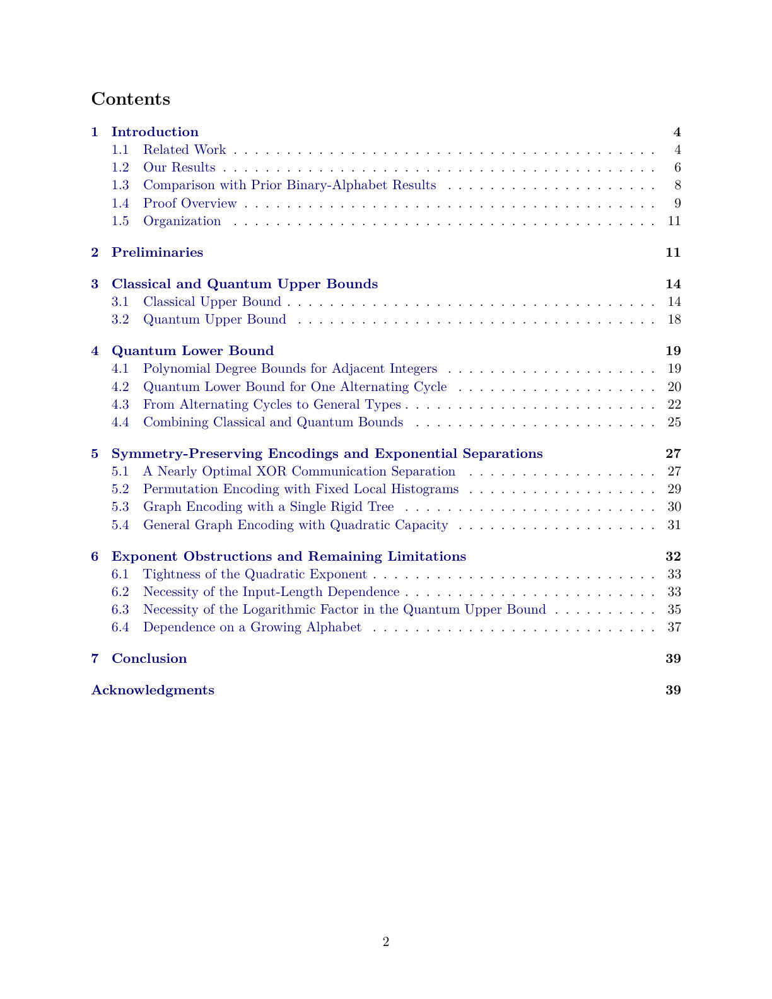
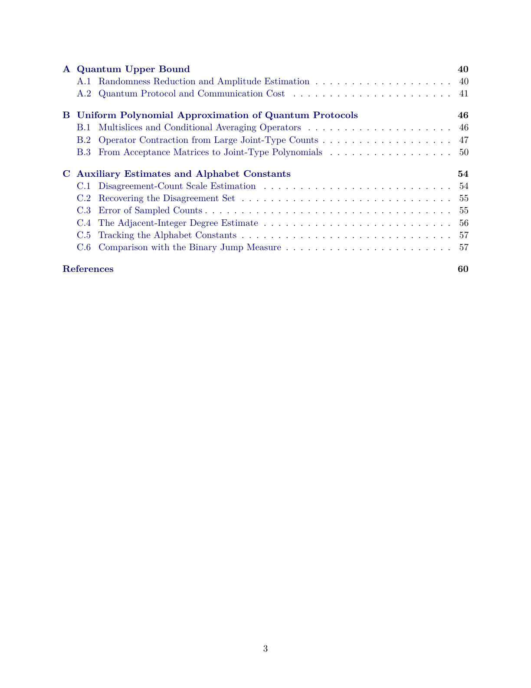
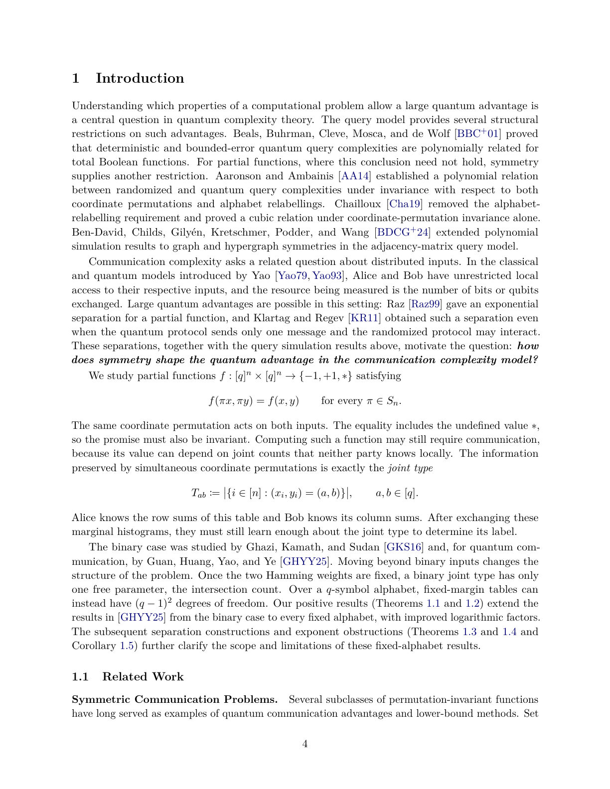
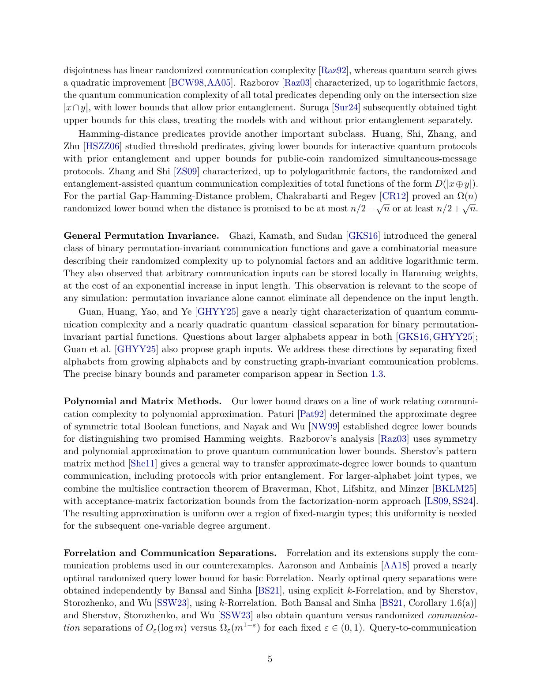
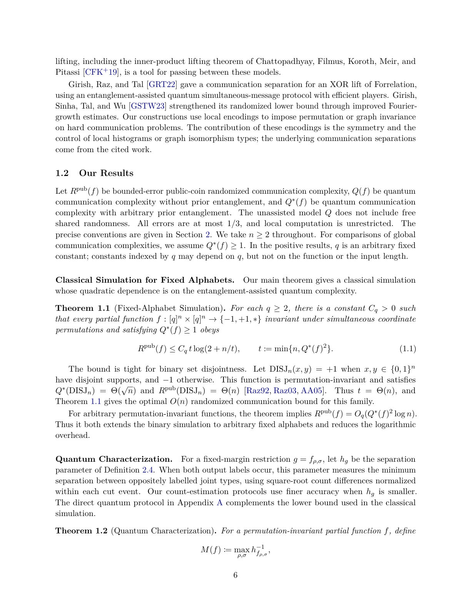
Summary. This work analyzes the quantum advantage in communication complexity for functions exhibiting symmetry. It proves that for fixed alphabets, the quantum speedup is polynomially bounded, but when the alphabet or graph structure grows with the input size, exponential separations between quantum and classical communication complexity are achievable. This refines prior results by improving logarithmic overheads and establishing necessary input-length dependencies.
Why it may be interesting. While the focus is on abstract communication complexity, the techniques used—relating classical/quantum resource bounds to combinatorial structures—are foundational to understanding the limits of quantum computation in information tasks.
Main problem. The paper investigates how symmetry constraints, specifically permutation invariance, limit the quantum advantage in two-party communication complexity.
Main result. For fixed alphabets, the public-coin randomized complexity is bounded by $O_q(Q^*(f)^2 \log n)$, but for growing alphabets or graph symmetries, exponential separations between quantum and classical complexity are possible.
Method. The analysis uses techniques from communication complexity theory, relating bounds to combinatorial parameters and employing advanced tools like polynomial approximation methods and multislice contraction theorems.
Model / system. The model is the communication complexity of partial functions $f: [q]^n imes [q]^n o \{-1, +1, *\}$ that are invariant under simultaneous coordinate permutations ($\pi \in S_n$).
Key observables. Public-coin randomized communication complexity ($R_{ ext{pub}}(f)$) and entanglement-assisted quantum communication complexity ($Q^*(f)$).
Important parameters / regimes. Alphabet size ($q$), input length ($n$), number of vertices ($v$), and separation exponents ($\epsilon$).
Assumptions / limitations. The analysis distinguishes between fixed alphabets (where speedup is at most quadratic) and growing alphabets/graph symmetries (where exponential separation occurs).
Paper structure. The paper proceeds by establishing upper and lower bounds for communication complexity, first for fixed alphabets, then extending to growing alphabets and graph symmetries, and finally comparing the resulting complexity measures to combinatorial parameters like the Binary Jump Measure.
We study how symmetry constrains quantum advantage in two-party communication complexity. For partial functions over any fixed alphabet of size $q$ that are invariant under simultaneous coordinate permutations, we prove that public-coin randomized and entanglement-assisted quantum communication complexities satisfy $R^{\mathrm{pub}}(f)=O_q(Q^{\ast}(f)^2\log n)$, where $n$ is the input length. We also characterize quantum communication complexity by a combinatorial parameter up to a logarithmic factor. These results extend the binary-alphabet result of Guan et al. and improve its logarithmic overhead. Input-length dependence is necessary: for every fixed $\varepsilon\in(0,1)$, binary permutation-invariant partial functions can have quantum complexity $O_\varepsilon(\log\log n)$ and randomized complexity $Ω_\varepsilon((\log n)^{1-\varepsilon})$. Growing alphabets and graph symmetries permit exponential separations. For every fixed $\varepsilon\in(0,1)$, we construct permutation-invariant partial functions on length-$n$ strings over an $n$-symbol alphabet with quantum complexity $O_\varepsilon(\log n)$ and randomized complexity $Ω_\varepsilon(n^{1-\varepsilon})$. We also construct graph-invariant partial functions on $v$-vertex graphs with quantum complexity $O_\varepsilon(\log v)$ and randomized complexity $Ω_\varepsilon(v^{2-\varepsilon})$. All separation protocols use neither prior entanglement nor shared randomness.
Authors: Mario Guillaume Cecile, Nis-Luca van Hülst, Tomohiro Hashizume, Pia Siegl, Abhishek Setty, José Diogo da Costa Jesus, Paul Over, Sergio Bengoechea, Muhammad Umer, Spyros Tserkis, Eleftherios Mastorakis, Tristan Kraft, Francisco Cárdenas-López, Leonardo Scandurra, Thomas Rung, Felix Motzoi, Belda Yesil, Barbara Kraus, Martin Kiffner, Dimitris G. Angelakis, Eugene de Villiers, Dieter Jaksch
Type: theory · Category: quantum information and computing · PDF: https://arxiv.org/pdf/2609.39962v1
Analysis basis: full PDF text, analyzed in chunks
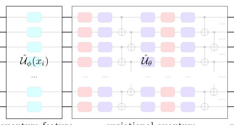
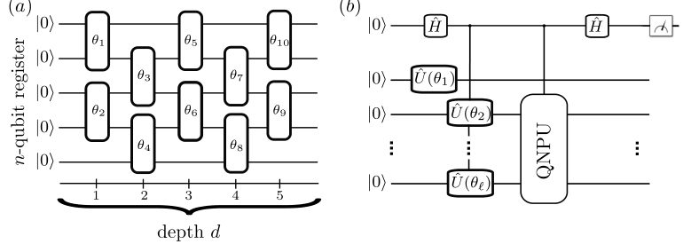
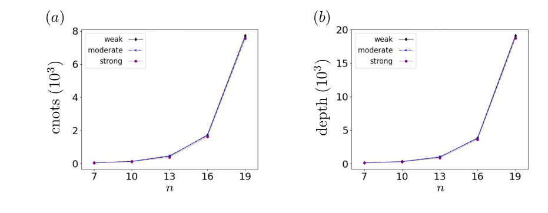
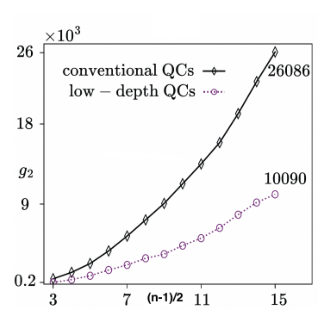
Summary. This paper provides a comprehensive review of quantum algorithms designed to tackle the massive computational challenges of Computational Fluid Dynamics (CFD). It analyzes both fully quantum methods and hybrid quantum-classical approaches, emphasizing the role of tensor networks for efficient data encoding. The work concludes that while the potential for quantum advantage is significant, its realization depends critically on the specific physical problem's mathematical structure and hardware constraints.
Why it may be interesting. It directly addresses applying quantum computation to complex, high-dimensional physical systems (like fluid dynamics), which is a major frontier for quantum simulation and quantum algorithms.
Main problem. Developing quantum algorithms to efficiently solve the complex partial differential equations (PDEs) arising in Computational Fluid Dynamics (CFD).
Main result. The paper reviews various quantum approaches, concluding that quantum advantage is highly problem-dependent, governed by factors like the condition number and representational complexity.
Method. It surveys fully quantum methods (QLSAs, Hamiltonian simulation) alongside hybrid quantum-classical techniques (QPINNs) and utilizes Tensor-Network (TN) formalisms to bridge CFD discretizations with quantum circuits.
Model / system. The focus is on simulating fluid dynamics, which is governed by PDEs like the Navier-Stokes equations, often involving turbulent flows and multiple interacting physical fields.
Key observables. Physically relevant observables extracted from quantum states, such as flow fields, and the efficiency of solving linear systems ($\mathbf{Ax=b}$).
Important parameters / regimes. Condition number ($\kappa(A)$), representational complexity, state preparation fidelity, and the scale of the problem (e.g., degrees of freedom $N$).
Assumptions / limitations. Potential quantum advantage is contingent on efficient state preparation, operator implementation, and measurement, rather than just amplitude encoding.
Paper structure. The review progresses by examining fully quantum methods, then hybrid quantum-classical approaches, and finally detailing the role of Tensor Networks in connecting CFD discretizations to quantum algorithms.
We present a comprehensive review of quantum approaches for solving partial differential equations (PDEs) arising in computational fluid dynamics (CFD). We examine fully quantum approaches, including quantum linear system algorithms (QLSAs), ranging from the Harrow--Hassidim--Lloyd (HHL) algorithm to quantum singular value transformation (QSVT), Hamiltonian simulation, and quantum lattice Boltzmann methods (QLBMs), while emphasizing hybrid quantum--classical approaches, including quantum physics-informed neural networks (QPINNs) and amplitude-encoded variational PDE solvers. We focus on hardware-agnostic algorithms compatible with present noisy processors and emerging fault-tolerant architectures. For each framework, we analyze the mathematical formulation, algorithmic structure, and principal limitations. We also examine tensor-network (TN) representations, since CFD fields, differential operators, and geometrical information can often be encoded efficiently in low-rank form. The TN formalism bridges CFD discretizations and quantum states, operators, and circuits, enabling compact representations to be translated into tensor-programmable variational quantum algorithms (TP-VQAs). We further review benchmark problems, including Poisson, reaction, diffusion, and nonlinear model equations, and assess how well quantum algorithms capture key features of fluid dynamics. Our analysis highlights that potential quantum advantage is highly problem dependent and governed by condition number, representational complexity, state preparation, and measurement constraints. We outline capabilities, limitations, and challenges toward scalable quantum algorithms for CFD.
Authors: Bireswar Das, Udit Kumar, Kavita Samant, Dhara Thakkar
Type: theory · Category: quantum information and computing · PDF: https://arxiv.org/pdf/2609.40260v1
Analysis basis: full PDF text, analyzed in chunks
Summary. This paper develops quantum algorithms to solve the minimum generating set problem for specific classes of black-box groups, particularly solvable groups and those in class $\Gamma_d$. It achieves this by recursively decomposing the group using its chief series and applying quantum techniques to factor quotient groups. The work establishes that the problem is solvable in polynomial time quantumly, advancing the theoretical understanding of quantum computation in group theory.
Why it may be interesting. While focused on abstract group theory, the development of polynomial-time quantum algorithms for complex structural problems like MIN-GEN demonstrates the power of quantum computation in solving classically hard computational problems.
Main problem. The paper addresses the computational problem of finding the minimum size of a generating set (MIN-GEN) for a given black-box group.
Main result. It presents polynomial-time quantum algorithms for computing minimum generating sets for solvable black-box groups and for groups in the class $\Gamma_d$.
Method. The approach involves designing recursive quantum algorithms that leverage the chief series decomposition of the group and utilize quantum oracles for group operations.
Model / system. The work is situated in the black-box group model, where group operations are implemented via quantum oracles ($U_G, U_{G^{-1}}$) acting on qubits.
Key observables. The minimum number of generators, $d(G)$, and the structure of the chief series of the group.
Important parameters / regimes. The encoding length $n$ of the group elements, and the complexity bounds related to $\log |G|$.
Assumptions / limitations. The analysis assumes the existence of a chief series and relies on the black-box group model framework, which allows for polynomial-time quantum computation of various group-theoretic invariants.
Figures summary. No figures were explicitly summarized in the notes.
Paper structure. The paper builds from establishing quantum algorithms for basic group properties (like composition series) to developing a recursive MIN-GEN algorithm based on the chief series decomposition, culminating in complexity proofs showing the problem is in AM.
In this paper, we present a polynomial-time quantum algorithm for computing a minimum-sized generating set of solvable black-box groups. Next, we consider the class $Γ_d$ of black-box groups, where every non-abelian composition factor is isomorphic to a subgroup of the symmetric group $S_d$ for a fixed $d$. We design polynomial-time quantum algorithms to compute the direct product decomposition of abelian factor groups and solve the constructive membership problem for factor groups of groups from $Γ_d$. With the help of these algorithms, we design a quantum algorithm for computing a chief series of black-box groups from $Γ_d$. Using the chief series, we construct a polynomial-time quantum algorithm for computing minimum generating sets of black-box groups from $Γ_d$. Finally, we show that the minimum generating set problem for general black-box groups is in $\textrm{NP} \cap \textrm{coAM}$.
Authors: Chenyi Zhang, Xinyu Tan, Robin Kothari, David Gosset, Craig Gidney
Type: theory · Category: quantum information and computing · PDF: https://arxiv.org/pdf/2609.39092v1
Analysis basis: full PDF text, analyzed in chunks
Summary. This paper presents a breakthrough in quantum circuit compilation, demonstrating a method to compile circuits from continuous gate sets to discrete universal gates with only constant overhead. By leveraging adaptivity and sophisticated quantum gadgets, the authors achieve gate counts that scale linearly with the original circuit size, which is crucial for practical quantum computation.
Why it may be interesting. This work provides fundamental theoretical advances in quantum compilation, directly impacting the feasibility and resource estimation for implementing complex quantum algorithms on near-term hardware.
Main problem. The paper addresses the overhead incurred when compiling quantum circuits defined by an arbitrary continuous gate set down to a discrete universal gate set, such as {H, T, CNOT}.
Main result. They show that by employing adaptivity for polynomial-sized circuits with inverse-polynomial target error, the compilation overhead can be reduced to a constant factor, achieving $O(G)$ gate complexity.
Method. The authors utilize advanced techniques including adaptive circuit design, state injection and phase-halving gadgets, and encoding tricks to manage the required precision and gate count.
Model / system. The model is quantum circuits composed of one- and two-qubit gates, which are approximated using the discrete gate set {H, T, CNOT}. Key components include the phase gradient state and various quantum gadgets.
Key observables. Gate count, circuit depth, and the achievable target error $\epsilon$.
Important parameters / regimes. The number of gates $G$, the target error $\epsilon$, and the circuit size $n$ (related to $G$).
Assumptions / limitations. The analysis relies on the optimal preparation of the phase gradient state and the successful implementation of complex subroutines like the SELECT function.
Figures summary. Figures illustrate the State Injection and Phase-Halving gadgets, and the structure of the tree data used for the SELECT function implementation.
Paper structure. The paper builds from general compilation overhead reduction (Theorem 1) to specific circuit implementations (Theorem 2), detailing the preparation of resource states (Theorem 3), and finally implementing complex functions like phase-halving and SELECT.
Compiling a continuous gate set to a discrete universal gate set generally incurs an overhead. A circuit composed of $G$ arbitrary one- and two-qubit gates can be $ε$-approximated by a sequence of gates from $\{H,T,\mathrm{CNOT}\}$ by replacing each original gate by a sequence of $O(\log(G/ε))$ elementary gates. We show that this overhead can be avoided using adaptivity for polynomial-sized circuits with inverse-polynomial target error, which is optimal.
Authors: Liuhang Ye, Bjarne Bergh, Nilanjana Datta
Type: theory · Category: quantum information and computing · PDF: https://arxiv.org/pdf/2609.40343v1
Analysis basis: full PDF text, analyzed in chunks
Summary. This paper provides advanced quantum de Finetti theorems for both quantum states and quantum channels, moving beyond standard trace distance bounds to use stronger operator inequalities. The authors derive improved error scaling for these representations, particularly for channels, by leveraging the Choi-Jamiołkowski isomorphism. This work advances the mathematical understanding of how local symmetries constrain global quantum correlations.
Why it may be interesting. The rigorous formulation using operator inequalities provides a powerful tool for bounding correlations in quantum systems, which is crucial for understanding resource theories and entanglement structure in quantum information.
Main problem. The paper extends quantum de Finetti theorems from standard trace distance formulations to the stronger framework of operator inequalities, allowing for rigorous analysis of quantum channels.
Main result. It establishes improved error bounds for both state and channel de Finetti representations, notably achieving a $k/n$ scaling for the state case and $O(k/\sqrt{n})$ for the channel case.
Method. The core method involves using the Choi–Jamiołkowski isomorphism to translate operator order between Choi states into completely positive (CP) order between quantum channels, avoiding issues associated with trace distance conversions.
Model / system. The study concerns permutation-invariant quantum states $ ho(n)$ and permutation-covariant quantum channels $\mathcal{N}(n)$ acting on tensor products of local systems $A^{\otimes n}$.
Key observables. The $k$-system reduced state/channel, the error parameter $\epsilon_{n,k,r}$, and the operator order between Choi states.
Important parameters / regimes. Total number of systems ($n$), number of retained systems ($k$), and the number of defects ($r$).
Assumptions / limitations. The analysis relies on the properties of operator inequalities and the no-signalling condition for the exponential channel theorem.
Paper structure. The paper develops the state de Finetti theorem using operator inequalities, then extends this framework to prove the channel de Finetti theorem, culminating in an exponential channel theorem under the no-signalling condition.
Standard finite quantum de Finetti theorems approximate the $k$-system marginals of permutation-invariant states of $n$-systems by mixtures of independent and identically distributed (iid) states, usually in trace distance. We prove both standard and Renner's exponential de Finetti theorems in the stronger form of operator inequalities, implying bounds in every Schatten norm and for every quantum Rényi divergence satisfying data processing. In the standard case, for fixed local dimension, our $k/n$ error bound in max-relative entropy improves on the previously best known $k^2/n$ scaling, even in the classical setting. The operator-inequality approach is particularly suited to study channel de Finetti representations because operator order between Choi states is equivalent to completely positive (CP) order between the underlying channels. For permutation-covariant channels $N^{(n)}:A^{\otimes n}\to B^{\otimes n}$, where $d_A=\dim A$, we prove that the $k$-system reduced channel is CP-dominated by a mixture of tensor-power channels with error $O(k/\sqrt{n})$ and polynomial dependence on the local dimensions, addressing a question raised by Berta et al. [Math. Program. 194, 781-829 (2022)]. Under the no-signalling condition, we also prove an exponential channel de Finetti theorem where the approximating mixture consists of Choi-almost-iid channels, whose normalized Choi states are almost-iid in the sense of Mazzola-Sutter-Renner. In the case of $r$ defects, the representation error is at most $\mathrm{poly}(n)\bigl(2d_A^4k^3/(nr^2)\bigr)^{(r+1)/2}$ and decays exponentially in $n$ for a suitable choice of parameters $r$ and $k$.
Authors: Daniel Germain, Mason Blanchard, Audrey Versteegen, Nora Bauer, Jonathan Mei, Claudio Girotto, Paul Smith, Martin Roetteler
Type: both · Category: quantum information and computing · PDF: https://arxiv.org/pdf/2609.40327v1
Analysis basis: full PDF text, analyzed in chunks
Summary. This paper tackles the computationally hard problem of optimizing smart grid distribution networks using Deep Reinforcement Learning. They propose a novel quantum-enhanced DRL approach, replacing classical network layers with quantum circuits. The results show that this hybrid quantum-classical model can solve the optimization problem effectively while requiring fewer parameters than purely classical deep learning models.
Why it may be interesting. The work directly applies quantum computation (PQC) to solve a complex, real-world optimization problem, demonstrating a potential quantum advantage in parameter efficiency for hybrid ML models.
Main problem. Optimizing the complex, NP-hard combinatorial problem of Distribution Network Reconfiguration (DNR) in smart grids.
Main result. Quantum-enhanced Deep Reinforcement Learning (DRL) networks can achieve competitive performance with significantly fewer trainable parameters compared to classical counterparts.
Method. A hybrid Double DQN framework is employed, replacing the classical MLP backbone of the Q-network with a Parameterized Quantum Circuit (PQC).
Model / system. The system modeled is an electrical distribution network (IEEE 33 and 69 bus systems) whose optimal topology must be found by sequentially modifying switch states.
Key observables. Mean final reward, line loss (MW), voltage profiles, and the number of trainable parameters.
Important parameters / regimes. Learning rate, discount factor, exploration parameters, and the number of qubits/circuit width (e.g., 12-qubit model).
Assumptions / limitations. The performance comparison is made between simulated and hardware-executed results on a trapped-ion quantum processor (IonQ Forte Enterprise-1).
Figures summary. Figures illustrate the DRL training procedure (replay buffer, Bellman target) and compare initial vs. post-reconfiguration voltage profiles on both ideal simulation and IonQ hardware.
Paper structure. The paper establishes DNR as an RL problem, details the DQL/DDQN framework, proposes the quantum enhancement, and evaluates performance metrics (reward, parameters) across different network sizes and hardware platforms.
Modern smart grids generate increasingly rich operational data and deploy greater numbers of remotely controlled switching assets than ever before, creating new opportunities for data-driven distribution network reconfiguration (DNR). DNR optimizes grid topology to improve efficiency, reduce power losses, and maintain operational constraints, but finding optimal switch configurations remains a computationally demanding combinatorial problem. In this paper, we propose a deep reinforcement learning (DRL) framework for static DNR to systematically investigate how the Q-network architecture affects both solution quality and learning performance. We evaluate multiple architectures within a controlled DRL framework, varying only the Q-network to isolate the contribution of each architectural choice. Our results show that quantum-enhanced Q-networks can achieve higher rewards with fewer parameters than their classical counterpart, suggesting that such architectures are a promising direction for combinatorial power systems optimization.
Authors: Jeremy Huang, Young Kun Ko, Chunhao Wang
Type: theory · Category: quantum information and computing · PDF: https://arxiv.org/pdf/2609.40293v1
Analysis basis: full PDF text, analyzed in chunks
Summary. This paper develops a theoretical framework to prove quantum lower bounds for the online SetDisjointness problem by reducing it from the 3SUM problem. By achieving sub-linear quantum reductions, the authors establish a new tradeoff bound ($p + 2q \ge 1$) for SetDisjointness, showing that classical complexity results do not translate directly to the quantum setting.
Why it may be interesting. While the topic is computational complexity, the reliance on quantum algorithms (quantum walks, amplitude amplification) and the establishment of quantum lower bounds place it at the intersection of quantum computation theory and complexity theory, which is relevant to understanding the limits of quantum information processing.
Main problem. The paper aims to establish quantum fine-grained conditional lower bounds for the online SetDisjointness problem by reducing it from the 3SUM problem and related Abelian 3-Orthogonal Array (3OA) problems.
Main result. They derive a quantum tradeoff bound for Online SetDisjointness: $p + 2q \geqslant 1$, conditional on the quantum 3SUM conjecture, which improves upon classical bounds.
Method. The core method involves constructing sub-linear time quantum reductions from 3SUM/3OA to SetDisjointness using advanced techniques like L-subset finding quantum walks and optimized hash-bucket data structures.
Model / system. The analysis is conducted within the standard quantum circuit model, focusing on the complexity of quantum algorithms for specific computational problems (3SUM, SetDisjointness) rather than a physical quantum system.
Key observables. The primary observables are the time complexities $p$ (preprocessing) and $q$ (query time) for solving SetDisjointness, constrained by the derived tradeoff $p + 2q \ge 1$.
Important parameters / regimes. The key parameters include the exponents $p$ and $q$, the size parameters $n$ (instance size) and $N$ (SetDisjointness instance size), and the parameter $\gamma$ used in the reduction complexity.
Assumptions / limitations. The results are highly conditional on the quantum 3SUM conjecture and the existence of specific, efficient families of hash functions.
Paper structure. The paper builds a general framework for fine-grained reductions to SetDisjointness, first establishing the quantum 3SUM reduction, then generalizing this to 3OA problems, and finally deriving the conditional lower bound $p + 2q \ge 1$ for online SetDisjointness.
In classical fine-grained complexity, the 3SUM Conjecture is used to prove a variety of conditional lower bounds on data structure and graph problems via an initial reduction to the SetDisjointness problem. However, there is an $\tilde{O}(n)$-time quantum algorithm for 3SUM and a direct application of Grover's algorithm to SetDisjointness queries beats the state-of-the-art classical conditional bound by Kopelowitz, Pettie, and Porat (SODA 2016); this shows that these classical bounds do not apply in the quantum setting. Thus establishing analogous conditional lower bounds in the quantum setting requires applying the quantum 3SUM Conjecture to a \emph{quantum} fine-grained reduction from 3SUM to SetDisjointness. We give the first sub-linear time quantum reductions from 3SUM to online SetDisjointness. Via our reduction, the quantum 3SUM conjecture implies a $p + 2q \geqslant 1$ tradeoff bound for quantum SetDisjointness algorithms with $O(N^p)$ preprocessing time and $O(N^q)$ query time. We also give an analogous reduction from 3XOR. These results are derived from a general framework for fine-grained reductions to SetDisjointness which applies to any Abelian 3-Orthogonal Array (3OA) problem with suitable almost-linear hash functions.
Authors: Fernando Granha Jeronimo, Xiaojuan Ma
Type: theory · Category: quantum information and computing · PDF: https://arxiv.org/pdf/2609.40262v1
Analysis basis: full PDF text, analyzed in chunks
Summary. This paper rigorously analyzes the limits of quantum list decoding and list recovery for quantum error-correcting codes like CSS codes. It derives precise asymptotic bounds for the required list sizes and the achievable radius-list size tradeoff. The work is crucial for understanding the fundamental performance boundaries of quantum information processing.
Why it may be interesting. This work provides rigorous, quantitative bounds on the performance limits of quantum error correction codes, which is fundamental knowledge for designing fault-tolerant quantum computation protocols.
Main problem. The paper studies the quantitative combinatorial bounds for Quantum List Recovery (QLR) and Quantum List Decoding (QLD) for quantum error-correcting codes.
Main result. It establishes specific asymptotic bounds for the list sizes ($L^\star$) and the optimal radius-list size tradeoff ($ ho_L^\star$) for both folded quantum Reed-Solomon and random CSS codes.
Method. The authors use advanced combinatorial techniques, including establishing a pairing lemma for joint X/Z candidate lists and adapting classical projection-and-patching arguments to the quantum setting.
Model / system. The focus is on quantum error correction using CSS codes, specifically folded quantum Reed-Solomon (FQRS) codes and balanced random CSS codes. The problem involves finding short lists of logically distinct Pauli corrections consistent with a syndrome.
Key observables. List size ($L$), decoding radius ($ ho$), and the quantum rate ($R$).
Important parameters / regimes. The quantum rate $R$, the component rate $R_1 = (1+R)/2$, and the small parameter $\gamma$ as the radius approaches the quantum Singleton bound.
Assumptions / limitations. The analysis assumes the existence of suitable one-sector certificates and relies on adapting classical list-decoding theorems to account for stabilizer equivalence in the quantum setting.
Paper structure. The paper progresses by first defining the problem in terms of QLR/QLD, then deriving the asymptotic bounds for specific code families (FQRS, random CSS), and finally establishing the necessary theoretical tools (pairing lemma, generalized Singleton bounds) to prove these bounds.
Quantum list recovery (QLR) and quantum list decoding (QLD) seek short lists of logically distinct Pauli corrections consistent with a syndrome and prescribed error constraints. For CSS codes, two issues arise: treating the \(X\)- and \(Z\)-sectors separately can multiply their output list sizes, while distinct classical candidates can collapse after stabilizer quotienting. We study combinatorial upper and lower bounds for balanced folded quantum Reed--Solomon (FQRS) codes and balanced random CSS codes, both studied by Bergamaschi, Golowich, and Gunn (STOC 24). Let \(R\in(0,1)\) be the quantum rate and \(R_1=(1+R)/2\) the common component rate. As the radius \(ρ=(1-R)/2-γ\) approaches the quantum Singleton bound, we have, deterministically for FQRS codes and w.h.p. for balanced random CSS codes, \[ L^\star_{\rm QLR} = \ell^{Θ(R_1/γ)}, \qquad L^\star_{\rm QLD} = Θ\!\left(\frac{1-R}γ\right) \qquad (γ\downarrow0). \] The asymptotically exact QLD radius tradeoff is \[ ρ_L^\star = \frac{L}{L+1}\frac{1-R}{2}. \] These conclusions extend to the average-radius setting. For achievability, building on the work of Brakensiek, Chen, Dhar, and Zhang (STOC 2026), we establish a pairing lemma for joint \(X/Z\) candidate lists that preserves the one-sector coefficient and avoids a product loss in list size. For the QLD converse, we prove a quantum generalized Singleton bound based on the classical projection-and-patching argument with stabilizer distinctness. For the QLR lower bounds, we adapt the folded Reed--Solomon construction of Chen and Zhang (STOC 2025) so that the candidates remain stabilizer distinct. For random CSS codes, we show classical bad lists survive the stabilizer quotient with high probability.
Authors: Alexander M. Dalzell, Yuan Su
Type: theory · Category: quantum information and computing · PDF: https://arxiv.org/pdf/2609.40254v1
Analysis basis: full PDF text, analyzed in chunks
Summary. This paper presents a quantum algorithm to compute the oblique eigenprojection of a general matrix, which is crucial for handling complex spectra beyond standard quantum eigenvalue routines. By introducing a two-sided block preconditioning technique utilizing the QFT, the authors significantly reduce the algorithm's normalization overhead while maintaining near-optimal query complexity. This breakthrough opens pathways for applying nonanalytic matrix functions on quantum hardware.
Why it may be interesting. While the focus is on linear algebra algorithms, the ability to efficiently compute nonanalytic functions (like projectors) is a fundamental tool for simulating complex quantum dynamics or analyzing open quantum systems governed by non-Hermitian Hamiltonians.
Main problem. The core problem is efficiently implementing the oblique eigenprojection ($\Pi$) onto generalized eigensubspaces of a general square matrix $A$ using a quantum computer.
Main result. The authors developed a two-sided block preconditioning technique using the Discrete Fourier Transform of the matrix resolvent, achieving a query complexity nearly linear in the inverse gap and a normalization factor close to the optimal $\lVert\Pi Vert$.
Method. The method replaces standard resolvent integration techniques with a novel block preconditioning scheme involving the QFT applied to the matrix resolvent, which resolves the large normalization factor issue.
Model / system. The model is a general square matrix $A$ acting on a Hilbert space, whose decomposition into generalized eigensubspaces is the focus. The computation is framed within the block encoding model for quantum access to $A$.
Key observables. The oblique eigenprojection $\Pi$, the normalization factor $\alpha$, and the query complexity.
Important parameters / regimes. The spectral gap ($\delta$) between the spectrum and the target region, and the matrix norm $\lVert\Pi Vert$.
Assumptions / limitations. The result requires a 'spectral-set condition on $A$' and assumes block encoding access to the input matrix $A$.
Figures summary. Figure 1 contrasts the eigenprojection problem for real vs. complex spectra. Figure 2 illustrates the block encoding process using a joint unitary $O_A$ and ancilla measurement.
Paper structure. The paper progresses from establishing the general problem (oblique eigenprojection) to detailing the technical improvement (two-sided block preconditioning via QFT) and finally demonstrating applications to solving complex linear matrix equations like the Riccati and Sylvester equations.
Every square matrix decomposes its underlying Hilbert space into generalized, nonorthogonal eigensubspaces. We show that a quantum computer can perform such an oblique eigenprojection $Π$ given block encoding access to the input matrix. Our approach has a query complexity nearly linear in the inverse gap and a normalization factor close to $\lVertΠ\rVert$ under a spectral-set condition on the input. This covers common assumptions on the numerical range or diagonalizability and matches known results for orthogonal eigenprojections. We achieve this with a two-sided block preconditioning that uses a discrete Fourier transform of the matrix resolvent. We describe applications to: (i) preparing eigenstates of matrices with complex eigenvalues, extending the quantum eigenvalue transformation algorithm of Low and Su beyond real spectra; (ii) solving continuous-time algebraic Riccati equations, cubically speeding up a prior solver of Rodenas-Ruiz, Zhao, and Lee; and (iii) solving ordinary Sylvester equations, quadratically improving a direct augmented method of Wang and Liu. Our result suggests a promising route to applying nonanalytic matrix functions on quantum computers.
Authors: Min-Hsiu Hsieh, Shogo Yamada
Type: theory · Category: quantum information and computing · PDF: https://arxiv.org/pdf/2609.38986v1
Analysis basis: full PDF text, analyzed in chunks
Summary. This paper introduces Quantum Pseudorandom Error-Correcting Codes (QPRCs) as quantum analogues of classical PRCs. By developing new classical tools and refining decoding methods, the authors construct PRICs that are provably robust to local quantum noise while remaining computationally indistinguishable from ideal random quantum states. This advances the field by merging quantum error correction with quantum cryptography.
Why it may be interesting. The work provides concrete, theoretically grounded constructions for quantum codes that possess desirable cryptographic properties (pseudorandomness) alongside their primary function (error correction), which is crucial for building secure quantum communication protocols.
Main problem. The paper aims to construct Quantum Pseudorandom Error-Correcting Codes (QPRCs) that are quantum analogues of classical PRCs, ensuring both strong pseudorandomness and robustness against local quantum noise.
Main result. The authors construct PRICs (Pseudorandom Isometric Error-Correcting Codes) robust to $o(n \log \log n / \log n)$-local quantum noise, achieving a direct quantum analogue of classical PRCs under the LPN assumption.
Method. The construction relies on developing new classical primitives (PRFCs) and improving the decoding procedure within the Codeword-Stabilized (CWS) framework to build the quantum codes.
Model / system. The model involves quantum error correction, encoding $n_L$ logical qubits into $n_P$ physical qubits, and analyzing the performance of the resulting quantum channels under local noise.
Key observables. The fidelity of the encoding/decoding process relative to the identity channel (diamond distance), and the distinguishability between the encoded state and ideal random states (Haar-random isometries).
Important parameters / regimes. The physical qubit number ($n_P$), the number of logical qubits ($n_L$), the local noise threshold ($t$ or $\alpha n$), and the security parameter $\lambda$.
Assumptions / limitations. The hardness of the Learning Parity with Noise (LPN) problem for $2^{O(\sqrt{n})}$-time quantum algorithms is the primary assumption.
Figures summary. No specific figures are described, but the notes reference tables summarizing the capabilities of different code types (PRC, PRFC, QPRC, PRIC).
Paper structure. The paper develops the theory by first defining QPRCs, then constructing PRICs using new classical primitives (PRFCs) and advanced decoding techniques within the CWS framework, culminating in proofs bounding the error and distinguishing capabilities.
Pseudorandom error-correcting codes (PRCs), introduced by Christ and Gunn [CRYPTO 2024], are classical error-correcting codes whose codewords are computationally indistinguishable from uniformly random strings. We initiate the study of quantum analogues of PRCs. We define quantum pseudorandom error-correcting codes (QPRCs). Assuming that Learning Parity with Noise (LPN) is hard for $2^{O(\sqrt{n})}$-time quantum algorithms, we construct QPRCs whose encodings are indistinguishable from Haar-random isometries. We call these pseudorandom isometric error-correcting codes (PRICs), and our construction is robust to all $o(n \frac{\log \log n}{\log n})$-local quantum noise, where $n$ is the number of physical qubits. Under the same assumption, we also construct QPRCs whose encodings are indistinguishable from the completely depolarizing channel and that are robust to all $αn$-local quantum noise for some constant $α>0$. The latter QPRCs give a direct quantum analogue of classical PRCs. To construct PRICs, we develop two technical ingredients of independent interest. First, we introduce a new classical cryptographic primitive which we call pseudorandom functional error-correcting codes (PRFCs) and construct them under the same LPN assumption. Second, we develop a new efficient decoding procedure within the codeword-stabilized (CWS) framework introduced in [Cross, Smith, Smolin, and Zeng, IEEE ISIT 2008], which is a generic framework for constructing quantum error-correcting codes by combining (possibly nonlinear) classical error-correcting codes and graphs. This resolves the open problem of finding a general method for efficiently decoding such CWS codes based on nonlinear classical codes, raised in [Li, Dumer, Grassl, and Pryadko, Physical Review A 2010].
← Index · ← Previous · Next →